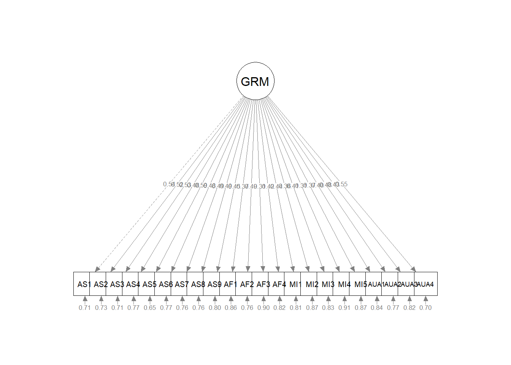

Chapter 10 CFA: First Order Models
This is the first in our series on confirmatory factor analysis (CFA).
Our goal is:
- Comparison of CFA to EFA/PCA
- Identify issues in specifying models
- Specifying and running first order models:
- unidimensional
- multidimensional
- Interpreting output
- Comparing two versions (unidimensional, multidimensional) of a first-order model
10.2 Two Broad Categories of Factor Analysis: Exploratory and Confirmatory
Kline (2016) described confirmatory factor analysis as “exactly half that of SEM – the other half comes from regression analysis” (p. 189).
10.2.1 Common to Both Exploratory and Confirmatory Approaches
In both exploratory and confirmatory approaches, the variance of each indicator/item is divided into common and unique variance. When we assume that variance is 1.0, the common variance becomes the communality. If we have 8 items, we will have 8 communalities and this represents the common variance explained by the factors or components.
- Common variance is shared among the indicators and serves as a basis for observed covariances among them that depart, meaningfully, from zero. We generally assume that
- common variance is due to the factors, and
- there will be fewer factors than the number of indicators/items (after all, there is no point in retaining as many factors [explanatory entities] as there are entities to be explained [indicators/items])
- the proportion of total variance that is shared is the communality (estimated by \(h^2\)); if \(h^2\) =.70, then 70% of the total indicator variance is common and potentially explained by the factors
- Unique variance consists of
- specific variance: systematic variance that is not explained by any factor in the model
- random measurement error
- method variance is not pictured, but could be another source of unique variance
- In factor analysis, summing the communalities represents the total common variance (a portion of the total variance), but not the total variance.
- Factor analysis, then, aligns well with classic test theory and classic approaches to understanding reliability (observed score = true score + error).
- The inclusion of error is illustrated well in the classic illustrations of CFA and SEM where each item/indicator includes common variance (from the factor) and error variance.
Recall that principal components analysis (PCA is not factor analysis) one of the key distinctions is that all variance is common variance (there is no unique variance). Total common variance is equal to the total variance explained, which in turn is equal to the total variance.

10.2.2 Differences between EFA and CFA
- A priori specification of the number of factors
- EFA requires no a priori specification; prior to extraction an EFA program will extract as many factors as indicators. Typically, in subsequent analyses, the researchers specifies how many factors to extract.
- CFA requires researchers to specify the exact number of factors.
- The degree of “exact correspondence” between indicators/items and factors/scales
- EFA is an unrestricted measurement model That is, indicators/items depend on (theoretically, measure) all factors. The direct effects from factors to indicators are pattern coefficients. Kline (2016) says that most refer to these as factor loadings or just loadings but because he believes these terms are ambiguous, he refers to the direct effects as pattern coefficients. We assign them to factors based on their highest loadings (and hopefully no cross-loadings). Depending on whether we select an orthogonal or oblique relationship, correlations between factors will be permitted or suppressed.
- CFA is a restricted measurement model. The researcher specifies the factor(s) on which each indicator/item(s) depends (recall, the causal direction in CFA is from factor to indicators/items.)
- Identification status The identification of a model has to do with whether it is theoretically possible for a computer to derive a unique set of model parameter estimates. Identification is related to model degrees of freedom; we will later explore under-, just-, and over-identified models. For now:
- EFA models with multiple factors are unidentified because they will have more free parameters than observations. Thus, there is no unique set of statistical estimates for the multifactor EFA model, consequently this requires the rotation phase in EFA.
- CFA models must be identified before they can be analyzed so there is only one unique set of parmeter estimates. Correspondingly, there is no rotation phase in CFA.
- Sharing variances
- In EFA the specific variance of each indicator is not shared with that of any other indicator.
- In CFA, the researchers can specify if variance is shared between certain pairs of indicators (i.e., error covariances).
10.2.3 On the relationship between EFA and CFA
Kline (2016) admonishes us to not overinterpret the labels “exploratory” and “confirmatory”. Why?
- EFA requires no a priori hypotheses about the relationship between indicators/items and factors, but researchers often expect to specify a predetermined number of factors.
- CFA is not strictly confirmatory. After initial runs, many researchers modify models and hypotheses.
CFA is not a verification or confirmation of EFA results for the same data and number of factors. Kline (2016) does not recommend that researchers follow a model retained from EFA. Why?
- It is possible that the CFA model will be rejected. Oftentimes this is because the secondary coefficients (i.e., non-primary pattern coefficients) accounted for a signifciant proportion of variance in the model. When they are constrained to 0.0 in the CFA model, the model fit will suffer.
- If the CFA model is retained, then it is possible that both EFA and CFA capitalized on chance variation. Thus, if verification via CFA is desired, it should be evaluated through a replication sample.
10.3 Exploring a Standard CFA Model
The research vignette for today is a fairly standard CFA model.

The image represents represents the hypothesis that \(AS_1 - AS_9\), \(AF_1 - AF_4\), \(MI_1 - MI_5\), and \(AUA_1 - AUA_4\) measure, respectively, the AS, AF, MI, and AUA factors, which are assumed to covary. Specifically,in this model:
- Each indicator is continuous with two causes: \(AS\) –> \(AS_1\) <– \(E_1\)
- a single factor that the indicator is supposed to measure, and
- all unique sources of influence represented by the error term
- The error terms are independent of each other and of the factors
- All associations are linear and the factors covary.
- hence, the symbol for an unanalyzed association is a solid line (upgraded from the dashed one in the EFA)
- Each item has a single pattern coefficient (i.e., often more casually termed as a “factor loading”)
- All other potential pattern coefficients are set to “0.00.” These are hard hypotheses and are specified by their absence (i.e., not specified in the code or in the diagram).
- Structure coefficients are the Pearson correlations between factors and continuous indicators. They reflect any source of association, causal or non causal. Sometimes the association is an undirected, back-door path. There is no pattern coefficient for \(AS_2\) <-> \(AF\). BUT, there is a connection from \(AS_2\) to \(AF\) via the \(AS\) <–> \(AF\) covariance.
- Scaling constants (aka unit loading identification [ULI] constraints) are necessary to scale the factors in a metric related to that of the explained (common) variance of the corresponding indicator, or reference (marker) variable. In the figure these are the dashed-line paths from \(AS\) –> \(AS_1\), \(AF\) –> \(AF1\), \(MI\) –> \(MI1\) and \(AUA\) –> \(AUA1\).
- Selecting the reference marker variable is usually aribtrary and selected by the computer program as the first (or last) variable in the code/path. So long as all the indicator variables of the same factor have equally reliable scores, this works satisfactorily.
- Additional scaling constants are found for each of the errors and indicators.
10.3.1 Model Identification for CFA
SEM, in general, requires that all models be identified. Measurement models analyzed in CFA share this requirement, but identification is more straightforward than in other models.
Standard CFA models are sufficiently identifed when:
- A single factor model has at least three indicators, or
- In a model with two or more factors, each factor has two or more indicators.
- Note: It is better to have at least three to five indicators per factor to prevent technical problems with statistical identification.
Identification becomes much more complicated than this, but for today’s models this instruction is sufficent.
10.3.2 Selecting Indicators/Items for a Reflective Measurement
Reflective measurement is another term to describe the circumstance where latent variables are assumed to cause observed variables. Observed variables in reflective measurement are called effect (reflective) indicators.
- At least three for a unidimensional model; at least two per factor for a multidimensional model (but more is safer).
- The items/indicators should have reasonable internal consistency, they should correlate with each other, and correlate more with themselves than with items on other factors (if multidimensional).
- Negative correlations reduce the reliability of factor measurement, so they should be reverse coded pior to analysis.
- Do not be tempted to specify a factor with indicators that do not measure something. A common mistake is to create a “background” factor and include indicators such as gender, ethnicity, and level of education. Just what is the predicted relationship between gender and ethnicity?
10.4 CFA Workflow
Below is a screenshot of a CFA workflow. The original document is located in the Github site that hosts the ReCentering Psych Stats: Psychometrics OER.

Because the intended audience for the ReCentering Psych Stats OER is the scientist-practitioner-advocate, this lesson focuses on the workflow and decisions. As you might guess, the details of CFA can be quite complex and require more investigation and decision-making in models that pose more complexity or empirical challenges.
- Creating an items only dataframe where any items are scaled in the same direction (e.g., negatively worded items are reverse-scored).
- Determining a factor structure that is identified, that is
- A single factor (unidimensional) model has at least three items/indicators
- Multidimensional models have at least two items per factor
- Specify a series of models, these typicallyinclude
- A unidimensional model (all items on a single factor)
- A single order structure with correlated factors
- A second orer structure
- A bifactor structure
- Evaluate model fit with a variety of indicators
- factor loadings
- fit indices
- Compare models
- In the event of poor model fit, investigate modification indices and consider respecification
- eliminating items
- changing factor membership
- allowing errors to covary
10.4.1 CFA in lavaan Requires Fluency with the Syntax
It’s really just regression
- tilda (~, is regressed on) is regression operator
- place DV (y) on left of operator
- place IVs, separate by + on the right
f is a latent variable (LV)
Example: y ~ f1 + f2 + x1 + x2
LVs must be defined by their manifest or latent indicators.
- the special operator (=~, is measured/defined by) is used for this
- Example: f1 =~ y1 + y2 + y3
Variances and covariances are specified with a double tilde operator (~~, is correlated with)
- Example of variance: y1 ~~ y1 (the relationship with itself)
- Example of covariance: y1 ~~ y2 (relationship with another variable)
- Example of covariance of a factor: f1 ~~ f2
*Intercepts (~ 1) for observed and LVs are simple, intercept-only regression formulas + Example of variable intercept: y1 ~ 1 + Example of factor intercept: f1 ~ 1
A complete lavaan model is a combination of these formula types, enclosed between single quotation models. Readibility of model syntax is improved by:
- splitting formulas over multiple lines
- using blank lines within single quote
- labeling with the hashtag
myModel <- ’# regressions y1 + y2 ~ f1 + f2 + x1 + x2 f1 ~ f2 + f3 f2 ~ f3 + x1 + x2
# latent variable definitions
f1 =~ y1 + y2 + y3
f2 =~ y4 + y5 + y6
f3 =~ y7 + y8 + y9 + y10
# variances and covariances
y1 ~~ y1
y2 ~~ y2
f1 ~~ f2
# intercepts
y1 ~ 1
fa ~ 110.4.2 Differing Factor Structures
All models worked in this lesson are first-order (or single-order) models; in the next lesson we extend to hierarchical and bifactor models. To provide an advanced cognitive organizer, let’s take a look across the models.

Models A and B are first-order models. Note that all factors are on a single plane.
- Model A is undimensional, each item is influenced by a single common factor and a term that includes systematic and random error. Note that there is only one systematic source of variance for each item and it is from a single source.
- Model B is often referred to as a “correlated traits” model. Here, the larger construct is separated into distinct-yet-correlated elements. The variance of each item is assumed to be a weighted linear function of two or more common factors.
- Models C is a second-order factor structure. Rather than merely being correlated, factors are related because they share a common cause. In this model, the second order factor explains why three or more traits are correlated. Note that here is no direct relationship between the item and the target construct. Rather, the relationship between the second-order factor and each item is mediated through the primary factor (yes, an indirect effect!).
- Model D is a bifactor structure. Here each item loads on a general factor. This general factor (bottom row) reflects what is common among the items and represents the individual differences on the target dimension that a researcher is most interested in. Group factors (top row) are now specified as orthogonal. The group factors represent common factors measured by the items that explain item response variation not accounted for by the general factor. In some research scenarios, the group factors are termed “nuisance” dimensions. That is, that which they have in common interferes with measuring the primary target of interest.
10.5 Research Vignette
This lesson’s research vignette emerges from Keum et al’s Gendered Racial Microaggressions Scale for Asian American Women (GRMSAAW; (Keum et al., 2018)). The article reports on two separate studies that comprised the development, refinement, and psychometric evaluation of two, parallel, versions (stress appraisal, frequency) of scale. I simulated data from the final construction of the frequency version as the basis of the lecture. If the scale looks somewhat familiar it is because the authors used the Gendered Racial Microaggressions Scale for Black Women (J. A. Lewis & Neville, 2015) as a model.
Keum et al. (2018) reported support for a total scale score (22 items) and four subscales. Below, I list the four subscales, their number of items, and a single example item. At the outset, let me provide a content advisory For those who hold this particular identity (or related identities) the content in the items may be upsetting. In other lessons, I often provide a variable name that gives an indication of the primary content of the item. In the case of the GRMSAAW, I will simply provide an abbreviation of the subscale name and its respective item number. This will allow us to easily inspect the alignment of the item with its intended factor, and hopefully minimize discomfort. If you are not a member of this particular identity, I encourage you to learn about these microaggressions by reading the article in its entirety. Please do not ask members of this group to explain why these microaggressions are harmful or ask if they have encountered them.
There are 22 items on the GRMSAAW scale. The frequency scaling ranged included: 0(never), 1 (rarely), 2(sometimes), 3(often), 4(very frequently), and 5(always).
The four factors, number of items, and sample item are as follows:
- Ascribed Submissiveness
- 9 items
- “Others have been surprised when I disagree with them.”
- Abbreviated in the simulated data as “AS#”
- Asian Fetishism
- 4 items
- “Others have treated me as if I am always open to sexual advances.’”
- Abbreviated in the simulated data as “AF#”
- Media Invalidation
- 5 items
- “I see AAW playing the same type of characters (e.g., Kung Fu woman, sidekick, mistress, tiger mom) in the media.”
- Abbreviated in the simulated data as “MI#”
- Assumptions of Universal Appearance
- 4 items
- “Others have pointed out physical traits in AAW that do not look ‘Asian’.”
- Abbreviated in the simulated data as “AUA#”
Four additional scales were reported in the Keum et al. article (Keum et al., 2018). Fortunately, I was able to find factor loadings from the original psychometric article or subsequent publications. For multidimensional scales, I assign assign variable names according to the scale to which the item belongs (e.g., Env42). In contrast, when subscales or short unidimensional scales were used, I assigned variable names based on item content (e.g., “blue”). In my own work, I prefer item-level names so that I can quickly see (without having to look up the item names) how the items are behaving. While the focus of this series of chapters is on the Gendered Racial Microaggressions Scale for Asian American Women scale, this simulated data might be useful to you in one or more of the suggestions for practice (e.g., examining the psychometric characteristics of one or the other scales). The scales, their original citation, and information about how I simulated data for each are listed below.
- Racial Microaggressions Scale (RMAS; (Torres-Harding et al., 2012)) is a 32-item scale with Likert scaling ranging from 0 (never) to 3 (often/frequent). Higher scores represent greater frequency of perceived microaggressions. I simulated data at the subscale level. The RMAS has six subscales, but only four (Invisibility, Low-Achieving/Undesirable Culture, Foreigner/Not Belonging,and Environmental Invalidation) were used in the study. Data were simulated using factor loadings (from the four factors) in the source article.
- Schedule of Sexist Events (SSE; (Klonoff & Landrine, 1995)) is a 20-item scale that with Likert scaling ranging from 1 (the event has never happened to me) to 6 (the event happened almost all [i.e., more than 70%] of the time). Higher scores represent greater frequency of everyday sexist events. I simulated data the subscale level. Within two larger scales (recent events, lifetime events), there are three subscales: Sexist Degradation and Its Consequences, Unfair/Sexist Events at Work/School, and Unfair Treatment in Distant and Close Relationships. Data were simulated using factor loadings fromthe source article.
- PHQ-9 (Kroenke et al., 2001) is a 9-item scale with Likert scaling ranging from 0 (not at all) to 3 (nearly every day). Higher scores indicate higher levels of depression. I simulated data by estimating factor loadings from Brattmyr et al. (2022).
- Internalized Racism in Asian American Scale (IRAAS (Choi et al., 2017)) is a 14-item scale with Likert scaling ranging from 1 (strongly disagree) to 6 (strongly agree). Higher scores indicate greater internalized racism. Data were simulated using the factor loadings from the bifactor model in the source article.
As you consider homework options, there is sufficient simulated data to use the RMAS, SSE, or IRAAS.
Below, I walk through the data simulation. This is not an essential portion of the lesson, but I will lecture it in case you are interested. None of the items are negatively worded (relative to the other items), so there is no need to reverse-score any items.
Simulating the data involved using factor loadings, means, standard deviations, and correlations between the scales. Because the simulation will produce “out-of-bounds” values, the code below rescales the scores into the range of the Likert-type scaling and rounds them to whole values.
#Entering the intercorrelations, means, and standard deviations from the journal article
Keum_GRMS_generating_model <- '
#measurement model
General =~ .50*AS1 + .44*AS2 + .50*AS3 + .33*AS4 + .58*AS5 + .49*AS6 + .51*AS7 + .53*AS8 + .50*AS9 + .53*AF1 + .74*AF2 + .54*AF3 + .52*AF4 + .64*AUA1 + .59*AUA2 + .67*AUA3 + .64*AUA4 + .59*MI1 + .50*MI2 + .52*MI3 + .40*MI4 + .55*MI5
AS =~ .68*AS1 + .65*AS2 + .53*AS3 + .55*AS4 + .54*AS5 + .55*AS6 + .42*AS7 + .47*AS8 + .50*AS9
AF =~ .63*AF1 + .45*AF2 + .56*AF3 + .54*AF4
AUA =~ .55*AUA1 + .55*AUA2 + .31*AUA3 + .31*AUA4
MI =~ .27*MI1 + .53*MI2 + .57*MI3 + .29*MI4 + .09*MI5
RMAS_FOR =~ .66*FOR1 + .90*FOR2 + .63*FOR4
RMAS_LOW =~ .64*LOW22 + .54*LOW23 + .49*LOW28 + .63*LOW29 + .58*LOW30 + .67*LOW32 + .67*LOW35 + .76*LOW36 + .72*LOW37
RMAS_INV =~ .66*INV33 + .70*INV39 + .79*INV40 + .71*INV41 + .71*INV47 + .61*INV49 + .65*INV51 + .70*INV52
RMAS_ENV =~ .71*ENV42 + .70*ENV43 + .74*ENV44 + .57*ENV45 + .54*ENV46
SSEL_Deg =~ .77*LDeg18 + .73*LDeg19 + .71*LDeg21 + .71*LDeg15 + .67*LDeg16 + .67*LDeg13 + .62*LDeg14 + .58*LDeg20
SSEL_dRel =~ .69*LdRel4 + .68*LdRel6 + .64*LdRel7 + .64*LdRel5 + .63*LdRel1 + .49*LdRel3
SSEL_cRel =~ .73*LcRel11 + .68*LcRel9 + .66*LcRel23
SSEL_Work =~ .73*LWork17 + .10*LWork10 + .64*LWork2
SSER_Deg =~ .72*RDeg15 + .71*RDeg21 + .69*RDeg18 + .68*RDeg16 + .68*RDeg13 + .65*RDeg19 + .58*RDeg14 + .47*RDeg20
SSER_dRel =~ .74*RDeg4 + .67*RDeg6 + .64*RDeg5 + .54*RDeg7 + .51*RDeg1
SSER_cRel =~ .69*RcRel9 + .59*RcRel11 + .53*RcRel23
SSER_Work =~ .72*RWork10 + .67*RWork2 + .62*RWork17 + .51*RWork3
SSE_Lifetime =~ SSEL_Deg + SSEL_dRel + SSEL_cRel + SSEL_Work
SSE_Recent =~ SSER_Deg + SSER_dRel + SSEL_cRel + SSER_Work
PHQ9 =~ .798*anhedonia + .425*down + .591*sleep + .913*lo_energy + .441*appetite + .519*selfworth + .755*concentration + .454*too_slowfast + .695*s_ideation
gIRAAS =~ .51*SN1 + .69*SN2 + .63*SN3 + .65*SN4 + .67*WS5 + .60*WS6 + .74*WS7 + .44*WS8 + .51*WS9 + .79*WS10 + .65*AB11 + .63*AB12 + .68*AB13 + .46*AB14
SelfNegativity =~ .60*SN1 + .50*SN2 + .63*SN3 + .43*SN4
WeakStereotypes =~ .38*WS5 + .22*WS6 + .10*WS7 + .77*WS8 + .34*WS9 + .14*WS10
AppearanceBias =~ .38*AB11 + .28*AB12 + .50*AB13 + .18*AB14
#Means
#Keum et al reported total scale scores, I divided those totals by the number of items per scale for mean scores
AS ~ 3.25*1
AF ~ 3.34*1
AUA ~ 4.52
MI ~ 5.77*1
General ~ 3.81*1
RMAS_FOR ~ 3.05*1
RMAS_LOW ~ 2.6*1
RMAS_INV ~ 2.105*1
RMAS_ENV ~ 3.126*1
SSEL_Deg ~ 2.55*1
SSEL_dRel ~ 1.96*1
SSEL_cRel ~ 3.10*1
SSEL_Work ~ 1.66*1
SSER_Deg ~ 2.02*1
SSER_dRel ~ 1.592*1
SSER_cRel ~ 1.777*1
SSER_Work ~ 1.3925*1
SSER_Lifetime ~ 2.8245*1
SSER_Recent ~ 2.4875*1
PHQ9 ~ 1.836*1
gIRAAS ~ 2.246*1
#Correlations
AS ~~ .00*AF
AS ~~ .00*AUA
AS ~~ .00*MI
AS ~~ .00*General
AS ~~ .28*RMAS_FOR
AS ~~ .24*RMAS_LOW
AS ~~ .46*RMAS_INV
AS ~~ .16*RMAS_ENV
AS ~~ .40*SSE_Lifetime
AS ~~ .28*SSE_Recent
AS ~~ .15*PHQ9
AS ~~ .13*gIRAAS
AF ~~ .00*AUA
AF ~~ .00*MI
AF ~~ .00*General
AF ~~ .02*RMAS_FOR
AF ~~ .05*RMAS_LOW
AF ~~ .11*RMAS_INV
AF ~~ .07*RMAS_ENV
AF ~~ .34*SSE_Lifetime
AF ~~ .27*SSE_Recent
AF ~~ -.04*PHQ9
AF ~~ .21*gIRAAS
AUA ~~ .00*MI
AUA ~~ .00*General
AUA ~~ .18*RMAS_FOR
AUA ~~ .20*RMAS_LOW
AUA ~~ .01*RMAS_INV
AUA ~~ -.04*RMAS_ENV
AUA ~~ .02*SSE_Lifetime
AUA ~~ .92*SSE_Recent
AUA ~~ .02*PHQ9
AUA ~~ .17*gIRAAS
MI ~~ .00*General
MI ~~ -.02*RMAS_FOR
MI ~~ .08*RMAS_LOW
MI ~~ .31*RMAS_INV
MI ~~ .36*RMAS_ENV
MI ~~ .15*SSE_Lifetime
MI ~~ .08*SSE_Recent
MI ~~ -.05*PHQ9
MI ~~ -.03*gIRAAS
General ~~ .34*RMAS_FOR
General ~~ .63*RMAS_LOW
General ~~ .44*RMAS_INV
General ~~ .45*RMAS_ENV
General ~~ .54*SSE_Lifetime
General ~~ .46*SSE_Recent
General ~~ .31*PHQ9
General ~~ -.06*gIRAAS
RMAS_FOR ~~ .57*RMAS_LOW
RMAS_FOR ~~ .56*RMAS_INV
RMAS_FOR ~~ .37*RMAS_ENV
RMAS_FOR ~~ .33*SSE_Lifetime
RMAS_FOR ~~ .25*SSE_Recent
RMAS_FOR ~~ .10*PHQ9
RMAS_FOR ~~ .02*gIRAAS
RMAS_LOW ~~ .69*RMAS_INV
RMAS_LOW ~~ .48*RMAS_ENV
RMAS_LOW ~~ .67*SSE_Lifetime
RMAS_LOW ~~ .57*SSE_Recent
RMAS_LOW ~~ .30*PHQ9
RMAS_LOW ~~ .16*gIRAAS
RMAS_INV ~~ .59*RMAS_ENV
RMAS_INV ~~ .63*SSE_Lifetime
RMAS_INV ~~ .52*SSE_Recent
RMAS_INV ~~ .32*PHQ9
RMAS_INV ~~ .23*gIRAAS
RMAS_ENV ~~ .46*SSE_Lifetime
RMAS_ENV ~~ .31*SSE_Recent
RMAS_ENV ~~ .11*PHQ9
RMAS_ENV ~~ .07*gIRAAS
SSE_Lifetime ~~ .83*SSE_Recent
SSE_Lifetime ~~ .30*PHQ9
SSE_Lifetime ~~ .14*gIRAAS
SSE_Recent ~~ .30*PHQ9
SSE_Recent ~~ .20*gIRAAS
PHQ9 ~~ .18*gIRAAS
#Correlations between SES scales from the Klonoff and Landrine article
#Note that in the article the factor orders were reversed
SSEL_Deg ~~ .64*SSEL_dRel
SSEL_Deg ~~ .61*SSEL_cRel
SSEL_Deg ~~ .50*SSEL_Work
SSEL_dRel ~~ .57*SSEL_cRel
SSEL_dRel ~~ .57*SSEL_Work
SSEL_cRel ~~ .47*SSEL_Work
SSER_Deg ~ .54*SSER_dRel
SSER_Deg ~ .54*SSER_Work
SSER_Deg ~ .59*SSER_cRel
SSER_dRel ~ .56*SSER_Work
SSER_dRel ~ .46*SSER_cRel
SSER_Work ~ .43*SSER_cRel
SSE_Lifetime ~ .75*SSE_Recent
'
set.seed(240311)
dfGRMSAAW <- lavaan::simulateData(model = Keum_GRMS_generating_model,
model.type = "sem",
meanstructure = T,
sample.nobs=304,
standardized=FALSE)
#used to retrieve column indices used in the rescaling script below
col_index <- as.data.frame(colnames(dfGRMSAAW))
#The code below loops through each column of the dataframe and assigns the scaling accordingly
#Rows 1 thru 22 are the GRMS items
#Rows 23 thru 47 are the RMAS
#Rows 48 thru 87 are the SSE
#Rows 88 thru 96 are the PHQ9
#Rows 97 thru 110 are the IRAAS
#Rows 111 thru 112 are scale scores for SSE
for(i in 1:ncol(dfGRMSAAW)){
if(i >= 1 & i <= 22){
dfGRMSAAW[,i] <- scales::rescale(dfGRMSAAW[,i], c(1, 5))
}
if(i >= 23 & i <= 47){
dfGRMSAAW[,i] <- scales::rescale(dfGRMSAAW[,i], c(0, 3))
}
if(i >= 48 & i <= 87){
dfGRMSAAW[,i] <- scales::rescale(dfGRMSAAW[,i], c(1, 6))
}
if(i >= 88 & i <= 96){
dfGRMSAAW[,i] <- scales::rescale(dfGRMSAAW[,i], c(0, 3))
}
if(i >= 97 & i <= 110){
dfGRMSAAW[,i] <- scales::rescale(dfGRMSAAW[,i], c(1, 6))
}
}
#rounding to integers so that the data resembles that which was collected
library(tidyverse)
dfGRMSAAW <- dfGRMSAAW %>% round(0)
#quick check of my work
#psych::describe(dfGRMSAAW) The optional script below will let you save the simulated data to your computing environment as either a .csv file (think “Excel lite”) or .rds object (preserves any formatting you might do). If you save the .csv file and bring it back in, you will lose any formatting (e.g., ordered factors will be interpreted as character variables).
#write the simulated data as a .csv
#write.table(dfGRMSAAW, file="dfGRMSAAW.csv", sep=",", col.names=TRUE, row.names=FALSE)
#bring back the simulated dat from a .csv file
#dfGRMSAAW <- read.csv ("dfGRMSAAW.csv", header = TRUE)An .rds file preserves all formatting to variables prior to the export and re-import. For the purpose of this chapter, you don’t need to do either. That is, you can re-simulate the data each time you work the problem.
#to save the df as an .rds (think "R object") file on your computer; it should save in the same file as the .rmd file you are working with
#saveRDS(dfGRMSAAW, "dfGRMSAAW.rds")
#bring back the simulated dat from an .rds file
#dfGRMSAAW <- readRDS("dfGRMSAAW.rds")10.5.1 Modeling the GRMSAAW as Unidimensional
Let’s start simply, taking the GRMSAAW data and seeing about its fit as a unidimensional instrument. First evaluating multi-dimensional measures as unidimensional is a common pratice. And there are two reasons:
- Operationally, it’s a check to see that data, script, and so forth. are all working.
- If you can’t reject a single-factor model (e.g., if there is a strong support for such), then it makes little sense to evaluate models with more factors (Kline, 2016).
With a single factor model:
- GRMSAAW is a latent variable and can be named anything. We know this because it is followed by: =~
- All the items follow and are “added” with the plus sign
- Don’t let this fool you…the assumption behind SEM/CFA is that the LV causes the score on the item/indicator. Recall, item/indicator scores are influenced by the LV and error.
- The entire model is enclosed in tic marks (’ and ’)
grmsAAWmod1 <- 'GRMSAAW =~ AS1 + AS2 + AS3 + AS4 + AS5 + AS6 + AS7 + AS8 + AS9 + AF1 + AF2 + AF3 + AF4 + MI1 + MI2 + MI3 + MI4 + MI5 + AUA1 + AUA2 + AUA3 + AUA4'
grmsAAWmod1[1] "GRMSAAW =~ AS1 + AS2 + AS3 + AS4 + AS5 + AS6 + AS7 + AS8 + AS9 + AF1 + AF2 + AF3 + AF4 + MI1 + MI2 + MI3 + MI4 + MI5 + AUA1 + AUA2 + AUA3 + AUA4"The object representing the model is then included in the lavaan::cfa() along with the dataset.
We can ask for a summary of the object representing the results.
grmsAAW1fit <- lavaan::cfa (grmsAAWmod1, data = dfGRMSAAW)
lavaan::summary(grmsAAW1fit, fit.measures=TRUE, standardized=TRUE, rsquare = TRUE)lavaan 0.6.17 ended normally after 33 iterations
Estimator ML
Optimization method NLMINB
Number of model parameters 44
Number of observations 304
Model Test User Model:
Test statistic 466.669
Degrees of freedom 209
P-value (Chi-square) 0.000
Model Test Baseline Model:
Test statistic 1479.910
Degrees of freedom 231
P-value 0.000
User Model versus Baseline Model:
Comparative Fit Index (CFI) 0.794
Tucker-Lewis Index (TLI) 0.772
Loglikelihood and Information Criteria:
Loglikelihood user model (H0) -7106.670
Loglikelihood unrestricted model (H1) -6873.336
Akaike (AIC) 14301.341
Bayesian (BIC) 14464.890
Sample-size adjusted Bayesian (SABIC) 14325.344
Root Mean Square Error of Approximation:
RMSEA 0.064
90 Percent confidence interval - lower 0.056
90 Percent confidence interval - upper 0.071
P-value H_0: RMSEA <= 0.050 0.002
P-value H_0: RMSEA >= 0.080 0.000
Standardized Root Mean Square Residual:
SRMR 0.068
Parameter Estimates:
Standard errors Standard
Information Expected
Information saturated (h1) model Structured
Latent Variables:
Estimate Std.Err z-value P(>|z|) Std.lv Std.all
GRMSAAW =~
AS1 1.000 0.416 0.545
AS2 0.994 0.143 6.943 0.000 0.413 0.504
AS3 0.974 0.137 7.101 0.000 0.405 0.520
AS4 0.893 0.129 6.914 0.000 0.371 0.501
AS5 1.198 0.152 7.897 0.000 0.498 0.608
AS6 0.701 0.110 6.401 0.000 0.291 0.452
AS7 0.892 0.130 6.891 0.000 0.371 0.499
AS8 0.974 0.137 7.093 0.000 0.405 0.519
AS9 0.837 0.117 7.179 0.000 0.348 0.528
AF1 0.712 0.120 5.922 0.000 0.296 0.409
AF2 1.016 0.138 7.360 0.000 0.422 0.547
AF3 0.622 0.117 5.324 0.000 0.258 0.359
AF4 0.769 0.134 5.716 0.000 0.319 0.392
MI1 0.590 0.109 5.401 0.000 0.245 0.366
MI2 0.661 0.122 5.417 0.000 0.275 0.367
MI3 0.831 0.139 5.992 0.000 0.345 0.415
MI4 0.647 0.133 4.874 0.000 0.269 0.324
MI5 0.604 0.118 5.099 0.000 0.251 0.342
AUA1 0.726 0.138 5.258 0.000 0.302 0.354
AUA2 0.889 0.132 6.732 0.000 0.370 0.483
AUA3 0.702 0.116 6.075 0.000 0.292 0.422
AUA4 0.904 0.132 6.835 0.000 0.376 0.493
Variances:
Estimate Std.Err z-value P(>|z|) Std.lv Std.all
.AS1 0.410 0.036 11.476 0.000 0.410 0.703
.AS2 0.502 0.043 11.641 0.000 0.502 0.746
.AS3 0.443 0.038 11.580 0.000 0.443 0.730
.AS4 0.411 0.035 11.652 0.000 0.411 0.749
.AS5 0.423 0.038 11.143 0.000 0.423 0.631
.AS6 0.331 0.028 11.810 0.000 0.331 0.796
.AS7 0.416 0.036 11.660 0.000 0.416 0.751
.AS8 0.445 0.038 11.584 0.000 0.445 0.731
.AS9 0.313 0.027 11.548 0.000 0.313 0.721
.AF1 0.436 0.037 11.922 0.000 0.436 0.833
.AF2 0.418 0.036 11.465 0.000 0.418 0.701
.AF3 0.450 0.037 12.029 0.000 0.450 0.871
.AF4 0.563 0.047 11.963 0.000 0.563 0.847
.MI1 0.390 0.032 12.017 0.000 0.390 0.866
.MI2 0.485 0.040 12.014 0.000 0.485 0.865
.MI3 0.572 0.048 11.908 0.000 0.572 0.828
.MI4 0.615 0.051 12.092 0.000 0.615 0.895
.MI5 0.477 0.040 12.062 0.000 0.477 0.883
.AUA1 0.635 0.053 12.039 0.000 0.635 0.875
.AUA2 0.449 0.038 11.714 0.000 0.449 0.767
.AUA3 0.392 0.033 11.890 0.000 0.392 0.821
.AUA4 0.439 0.038 11.679 0.000 0.439 0.757
GRMSAAW 0.173 0.036 4.795 0.000 1.000 1.000
R-Square:
Estimate
AS1 0.297
AS2 0.254
AS3 0.270
AS4 0.251
AS5 0.369
AS6 0.204
AS7 0.249
AS8 0.269
AS9 0.279
AF1 0.167
AF2 0.299
AF3 0.129
AF4 0.153
MI1 0.134
MI2 0.135
MI3 0.172
MI4 0.105
MI5 0.117
AUA1 0.125
AUA2 0.233
AUA3 0.179
AUA4 0.243I find it helpful to immediately plot what we did. A quick look alerts me to errors.
semPlot::semPaths(grmsAAW1fit, layout = "tree", style = "lisrel", what = "col", whatLabels = "stand")
10.5.1.1 Interpreting the Output
With a quick look at the plot, let’s work through the results. Rosseel’s (2019) lavaan tutorial is a useful resource in walking through the output.
The header is the first few lines of the information. It contains:
- the lavaan version number (0.6-9 that I’m using on 10/4/2021)
- maximum likelihood (ML) was used as the estimator
- confirmation that the specification converged normally after 28 iterations
- 304 cases were used in this analysis (would be less if some were skipped because of missing data)
- the model user test statistic, df, and corresponding p value: \(\chi ^{2}(209) = 1004.136, p < .001\)
Fit statistics are included in the second section. They are only shown when the argument “fit.measures = TRUE” is in the script. Standardized values are not the default, they require the argument, “standardized = TRUE”. We’ll come back to these shortly…
Parameter estimates is the last section.
For now we are interested in the Latent Variables section.
- Estimate contains the estimated or fixed parameter value for each model parameter;
- Std. err is the standard error for each estimated parameter;
- Z-value is the Wald statistic (the parameter divided by its SE)
- P(>|z|) is the p value for testing the null hypothesis that the parameter equals zero in the population
- Std.lv standardizes only the LVs
- Std.all both latent and observed variables are standardized; this is considered the “completely standardized solution”
Note that item AS1 might seem incomplete – there is only a 1.000 and a value for the Std.lv. Recall we used this to scale the single factor by fixing its value to 1.000. Coefficients that are fixed to 1.0 to scale a factor have no standard errors and therefore no significance test.
The SE and associated \(p\) values are associated with the unstandardized estimates. Intuitively, it is easiest for me to understand the relative magnitude of the pattern coefficients by looking at the Std.all column. We can see that the items associated with what we will soon define as the AS factor are all strong and positive. The remaining items have variable loadings with many of the being quite low, non-significant, and even negatively valenced.
Let’s examine to the middle set metrics which assess global fit.
CFA falls into a modeling approach to evaluating results. While it provides some flexibility (we get away from the strict, NHST appproach of \(p\) < .05) there is greater interpretive ambiguity.
Fit statistics tend to be clustered together based on their approach to summarizing the goodness or badness of fit.
10.5.1.2 Model Test User Model:
The chi-square statistic that evaluates the exact-fit hypothesis that there is no difference between the covariances predicted by the model, given the parameter estimates, and the population covariance matrix. Rejecting the hypothesis says that,
- the data contain covariance information that speak against the model, and
- the researcher should explain model-data discrepancies that exceed those expected by sampling error.
Traditional interpretion of the chi-square is an accept-support test where the null hypothesis represents the researchers’ believe that the model is correct. This means that the absence of statistical significance (\(p\) > .05) that supports the model. This is backwards from our usual reject-support test approach.
The \(\chi^2\) is frequently criticized:
- accept-support test approaches are logically weaker because the failure to disprove an assertation (the exact-fit hypothesis) does not prove that the assertion is true;
- too small a sample size (low power) makes it more likely that the model will be retained;
- CFA/SEM, though, requires large samples and so the \(\chi^2\) is frequently statistically significant – which rejects the researchers’ model;
Kline (2016) recommends that we treat the \(\chi^2\) like a smoke alarm – if the alarm sounds, there may or may not be a fire (a serious model-data discrepancy), but we should treat the alarm seriously and further inspect issues of fit.
For our unidimensional GRMSAAW CFA \(\chi ^{2}(209)=1004.136, p < .001\), this significant value is not what we want because it says that our specified model is different than the covariances in the model.
10.5.1.3 Model Test Baseline Model
This model is the independence model. That is, there is complete independence of of all variables in the model (i.e., in which all correlations among variables are zero). This is the most restricted model. It is typical for chi-quare values to be quite high (as it is in our example: 2114.899). On its own, this model is not useful to us. It is used, though, in comparisons of incremental fit.
10.5.1.4 Incremental Fit Indices (User versus Baseline Models)
Incremental fit indices ask the question, how much better is the fit of our specified model to the data then the baseline model (where it is assumed no relations between the variables).
The Comparative Fit Index (CFI) and Tucker-Lewis Index (TLI) are goodness of fit statistics, ranging from 0 to 1.0 where 1.0 is best.
CFI: compares the amount of departure from close fit for the researcher’s model against that of the independence/baseline (null) model.
\[CFI = 1-\frac{\hat{\Delta_{M}}}{\hat{\Delta_{B}}}\]
We can actually calculate this using the baseline and chi-square values from our own data:
[1] 0.5252085Where there is no departure from close fit, then CFI will equal 1.0. We interpret the value of the CFI as a percent of how much better the researcher’s model is than the baseline model. While 58% sounds like an improvement – Hu and Bentler (1999) stated that “acceptable fit” is achieved when the \(CFI \geq .95\) and \(SRMR \leq .08\); the combination rule. It is important to note that later simulation studies have not supported those thresholds.
TLI: aka the non-normed fit index (NNFI) controls for \(df_M\) from the researcher’s model and \(df_B\) from the baseline model. As such, it imposes a greater relative penalty for model complexity than the CFI. The TLI is a bit unstable in that the values can exceed 1.0.
Because the two measures are so related, only one should be reported (I typically see the CFI).
For our unidimensional GRMSAAW CFA, CFI = .578 and TLI = .534. While these predict around 58% better than the baseline/independence model, it does not come close to the standard of \(\geq .95\).
I note that our hand calcuation of user and baseline models did not result in the exact CFI. I do not know why.
10.5.1.5 Loglikelihood and Information Criteria
The Aikaike Information Criterion (AIC) and the Bayesian Information Criterion (BIC) utilize an information theory approach to data analysis by combing statistical estimation and model selection into a single framework. The BIC augments the AIC by taking sample size into consideration.
The AIC and BIC are usually used to select among competing nonhierarchical models and are only used in comparison with each other. Thus our current values of 17755.028 (AIC) and 17918.577 (BIC) are meaningless on their own. The model with the smallest value of the predictive fit index is chosen as the one that is most likely to replicate. It means that this model has relatively better fit and fewer free parameters than competing models.
For our unidimensional GRMSAAW CFA we’ll return to these values to compare a correlated, four-factor solution.
10.5.1.6 Root Mean Square Error of Approximation
The RMSEA is an absolute fit index scaled as a badness-of-fit statistic where a value of 0.00 is the best fit. The RMSEA favors models with more degrees of freedom and larger sample sizes. A unique aspect of the RMSEA is its 90% confidence interval.
While there is chatter/controversy about what constitutes an acceptable value, there is general consensus that \(RMSEA \geq .10\) points to serious problems. An \(RMSEA\leq .05\) is desired. Watching the upper bound of the confidence interval is important to see that it isn’t sneaking into the danger zone.
For our unidimensional GRMSAAW CFA, RMSEA = .112, 90% CI(.105, .119). Unfortuantely this value points to serious problems.
10.5.1.7 Standardized Root Mean Square Residual
The SRMR is an absolute fit index that is a badness-of-fit statistic (i.e., perfect model fit is when the value = 0.00 and increasingly higher values indicate the “badness”).
The SRMR is a standardized version of the root mean square residual (RMR), which is a measure of the mean absolute covariance residual. Standardizing the value facilitates interpretation.
Poor fit is indicated when \(SRMR \geq .10\).
Recall, Hu and Bentler’s combination rule (which is somewhat contested) suggested that the SRMR be interpreted along with the CFI such that: \(CFI \geqslant .95\) and \(SRMR \leq .05\).
For our unidimensional GRMSAAW CFA, SRMR = .124. Not good.
Inspecting the residuals (we look for relatively large values) may help understand the source of poor fit, so let’s do that.
$cov
AS1 AS2 AS3 AS4 AS5 AS6 AS7 AS8 AS9 AF1 AF2 AF3
AS1 0.582
AS2 0.172 0.672
AS3 0.168 0.167 0.607
AS4 0.154 0.153 0.150 0.548
AS5 0.207 0.206 0.202 0.185 0.671
AS6 0.121 0.120 0.118 0.108 0.145 0.416
AS7 0.154 0.153 0.150 0.138 0.185 0.108 0.553
AS8 0.168 0.167 0.164 0.150 0.201 0.118 0.150 0.608
AS9 0.144 0.144 0.141 0.129 0.173 0.101 0.129 0.141 0.434
AF1 0.123 0.122 0.120 0.110 0.147 0.086 0.110 0.120 0.103 0.524
AF2 0.175 0.174 0.171 0.157 0.210 0.123 0.157 0.171 0.147 0.125 0.596
AF3 0.107 0.107 0.105 0.096 0.129 0.075 0.096 0.105 0.090 0.077 0.109 0.517
AF4 0.133 0.132 0.129 0.118 0.159 0.093 0.118 0.129 0.111 0.095 0.135 0.083
MI1 0.102 0.101 0.099 0.091 0.122 0.071 0.091 0.099 0.085 0.073 0.104 0.063
MI2 0.114 0.113 0.111 0.102 0.137 0.080 0.102 0.111 0.096 0.081 0.116 0.071
MI3 0.143 0.143 0.140 0.128 0.172 0.101 0.128 0.140 0.120 0.102 0.146 0.089
MI4 0.112 0.111 0.109 0.100 0.134 0.078 0.100 0.109 0.093 0.080 0.113 0.069
MI5 0.104 0.104 0.102 0.093 0.125 0.073 0.093 0.102 0.087 0.074 0.106 0.065
AUA1 0.125 0.125 0.122 0.112 0.150 0.088 0.112 0.122 0.105 0.089 0.127 0.078
AUA2 0.154 0.153 0.150 0.137 0.184 0.108 0.137 0.150 0.128 0.109 0.156 0.096
AUA3 0.121 0.121 0.118 0.108 0.145 0.085 0.108 0.118 0.101 0.086 0.123 0.075
AUA4 0.156 0.155 0.152 0.139 0.187 0.109 0.139 0.152 0.131 0.111 0.159 0.097
AF4 MI1 MI2 MI3 MI4 MI5 AUA1 AUA2 AUA3 AUA4
AS1
AS2
AS3
AS4
AS5
AS6
AS7
AS8
AS9
AF1
AF2
AF3
AF4 0.665
MI1 0.078 0.450
MI2 0.088 0.067 0.561
MI3 0.110 0.085 0.095 0.691
MI4 0.086 0.066 0.074 0.093 0.688
MI5 0.080 0.062 0.069 0.087 0.067 0.540
AUA1 0.096 0.074 0.083 0.104 0.081 0.076 0.726
AUA2 0.118 0.091 0.102 0.128 0.099 0.093 0.112 0.585
AUA3 0.093 0.072 0.080 0.101 0.078 0.073 0.088 0.108 0.477
AUA4 0.120 0.092 0.103 0.130 0.101 0.094 0.113 0.139 0.110 0.580#lavaan::residuals(grmsAAW1fit, type = "raw")
#lavaan::residuals(grmsAAW1fit, type = "standardized")
#will hashtag out for knitted file
lavaan::residuals(grmsAAW1fit, type = "cor")$type
[1] "cor.bollen"
$cov
AS1 AS2 AS3 AS4 AS5 AS6 AS7 AS8 AS9 AF1
AS1 0.000
AS2 0.135 0.000
AS3 0.070 0.060 0.000
AS4 0.057 0.124 0.061 0.000
AS5 0.095 0.023 -0.035 0.024 0.000
AS6 0.029 0.112 0.018 0.060 0.121 0.000
AS7 0.012 0.071 0.043 0.013 -0.032 -0.068 0.000
AS8 0.016 0.074 0.002 0.021 0.016 0.007 0.090 0.000
AS9 0.014 0.126 0.023 0.104 0.097 0.092 -0.011 0.014 0.000
AF1 -0.047 -0.106 0.026 0.004 -0.046 -0.099 -0.021 0.028 -0.079 0.000
AF2 -0.057 -0.116 0.002 0.014 -0.057 -0.051 -0.057 -0.045 -0.053 0.171
AF3 -0.087 -0.111 0.021 -0.062 -0.057 -0.037 0.046 0.040 -0.082 0.264
AF4 -0.134 -0.046 0.027 -0.056 -0.021 -0.067 -0.046 -0.086 0.006 0.212
MI1 -0.044 -0.058 -0.075 -0.057 -0.068 -0.045 -0.032 -0.070 -0.135 0.072
MI2 -0.052 -0.062 -0.087 -0.071 -0.012 0.015 0.023 0.028 -0.100 -0.056
MI3 -0.061 -0.077 -0.058 -0.039 -0.011 -0.003 -0.033 0.046 -0.017 -0.051
MI4 -0.098 -0.111 0.034 -0.115 -0.081 -0.034 0.043 -0.088 -0.029 -0.010
MI5 0.049 -0.027 -0.045 0.036 0.033 -0.009 -0.030 -0.031 -0.069 -0.033
AUA1 -0.041 -0.108 -0.046 -0.101 -0.078 0.015 0.017 -0.046 -0.117 -0.112
AUA2 -0.109 -0.050 -0.023 -0.051 -0.019 -0.067 -0.020 -0.030 -0.016 -0.012
AUA3 0.052 -0.075 -0.026 -0.064 -0.060 -0.093 -0.016 -0.080 0.027 -0.058
AUA4 -0.007 -0.069 -0.067 -0.127 0.033 -0.069 0.007 -0.008 -0.046 0.028
AF2 AF3 AF4 MI1 MI2 MI3 MI4 MI5 AUA1 AUA2
AS1
AS2
AS3
AS4
AS5
AS6
AS7
AS8
AS9
AF1
AF2 0.000
AF3 0.125 0.000
AF4 0.161 0.116 0.000
MI1 0.101 0.048 0.043 0.000
MI2 -0.034 0.023 -0.007 0.102 0.000
MI3 -0.002 -0.056 -0.037 0.107 0.202 0.000
MI4 0.050 0.034 0.088 0.129 0.074 0.112 0.000
MI5 0.010 0.008 0.026 -0.070 0.101 -0.013 0.048 0.000
AUA1 0.086 -0.026 -0.060 0.092 0.078 0.110 0.039 0.034 0.000
AUA2 0.004 -0.017 0.013 0.038 0.077 0.048 0.019 0.034 0.141 0.000
AUA3 0.017 -0.064 -0.024 0.057 0.019 0.029 0.087 0.001 0.203 0.081
AUA4 -0.001 0.003 0.015 0.099 -0.032 -0.014 0.052 -0.020 0.089 0.128
AUA3 AUA4
AS1
AS2
AS3
AS4
AS5
AS6
AS7
AS8
AS9
AF1
AF2
AF3
AF4
MI1
MI2
MI3
MI4
MI5
AUA1
AUA2
AUA3 0.000
AUA4 0.109 0.000 lhs op rhs mi epc sepc.lv sepc.all sepc.nox
46 AS1 ~~ AS2 12.179 0.097 0.097 0.215 0.215
47 AS1 ~~ AS3 3.392 0.048 0.048 0.114 0.114
48 AS1 ~~ AS4 2.162 0.037 0.037 0.091 0.091
49 AS1 ~~ AS5 7.468 0.072 0.072 0.173 0.173
50 AS1 ~~ AS6 0.523 0.016 0.016 0.044 0.044
51 AS1 ~~ AS7 0.094 0.008 0.008 0.019 0.019
52 AS1 ~~ AS8 0.172 0.011 0.011 0.026 0.026
53 AS1 ~~ AS9 0.127 0.008 0.008 0.022 0.022
54 AS1 ~~ AF1 1.304 -0.029 -0.029 -0.069 -0.069
55 AS1 ~~ AF2 2.360 -0.040 -0.040 -0.096 -0.096
56 AS1 ~~ AF3 4.167 -0.053 -0.053 -0.123 -0.123
57 AS1 ~~ AF4 10.256 -0.093 -0.093 -0.194 -0.194
58 AS1 ~~ MI1 1.050 -0.025 -0.025 -0.062 -0.062
59 AS1 ~~ MI2 1.472 -0.033 -0.033 -0.073 -0.073
60 AS1 ~~ MI3 2.150 -0.043 -0.043 -0.089 -0.089
61 AS1 ~~ MI4 5.074 -0.068 -0.068 -0.136 -0.136
62 AS1 ~~ MI5 1.305 0.030 0.030 0.069 0.069
63 AS1 ~~ AUA1 0.928 -0.030 -0.030 -0.058 -0.058
64 AS1 ~~ AUA2 7.597 -0.073 -0.073 -0.169 -0.169
65 AS1 ~~ AUA3 1.581 0.031 0.031 0.076 0.076
66 AS1 ~~ AUA4 0.035 -0.005 -0.005 -0.011 -0.011
67 AS2 ~~ AS3 2.283 0.044 0.044 0.093 0.093
68 AS2 ~~ AS4 9.470 0.085 0.085 0.188 0.188
69 AS2 ~~ AS5 0.412 0.019 0.019 0.040 0.040
70 AS2 ~~ AS6 7.130 0.066 0.066 0.162 0.162
71 AS2 ~~ AS7 3.084 0.049 0.049 0.107 0.107
72 AS2 ~~ AS8 3.516 0.054 0.054 0.115 0.115
73 AS2 ~~ AS9 10.327 0.078 0.078 0.197 0.197
74 AS2 ~~ AF1 6.009 -0.069 -0.069 -0.148 -0.148
75 AS2 ~~ AF2 9.086 -0.085 -0.085 -0.186 -0.186
76 AS2 ~~ AF3 6.240 -0.071 -0.071 -0.150 -0.150
77 AS2 ~~ AF4 1.111 -0.034 -0.034 -0.063 -0.063
78 AS2 ~~ MI1 1.749 -0.035 -0.035 -0.079 -0.079
79 AS2 ~~ MI2 1.985 -0.042 -0.042 -0.084 -0.084
80 AS2 ~~ MI3 3.196 -0.058 -0.058 -0.108 -0.108
81 AS2 ~~ MI4 6.072 -0.082 -0.082 -0.147 -0.147
82 AS2 ~~ MI5 0.366 -0.018 -0.018 -0.036 -0.036
83 AS2 ~~ AUA1 5.910 -0.082 -0.082 -0.146 -0.146
84 AS2 ~~ AUA2 1.513 -0.036 -0.036 -0.075 -0.075
85 AS2 ~~ AUA3 3.045 -0.047 -0.047 -0.105 -0.105
86 AS2 ~~ AUA4 2.871 -0.048 -0.048 -0.103 -0.103
87 AS3 ~~ AS4 2.375 0.040 0.040 0.094 0.094
88 AS3 ~~ AS5 0.982 -0.027 -0.027 -0.062 -0.062
89 AS3 ~~ AS6 0.184 0.010 0.010 0.026 0.026
90 AS3 ~~ AS7 1.142 0.028 0.028 0.065 0.065
91 AS3 ~~ AS8 0.003 0.001 0.001 0.003 0.003
92 AS3 ~~ AS9 0.342 0.013 0.013 0.036 0.036
93 AS3 ~~ AF1 0.363 0.016 0.016 0.036 0.036
94 AS3 ~~ AF2 0.003 0.002 0.002 0.004 0.004
95 AS3 ~~ AF3 0.230 0.013 0.013 0.029 0.029
96 AS3 ~~ AF4 0.390 0.019 0.019 0.038 0.038
97 AS3 ~~ MI1 2.986 -0.043 -0.043 -0.104 -0.104
98 AS3 ~~ MI2 3.984 -0.056 -0.056 -0.120 -0.120
99 AS3 ~~ MI3 1.910 -0.042 -0.042 -0.084 -0.084
100 AS3 ~~ MI4 0.580 0.024 0.024 0.046 0.046
101 AS3 ~~ MI5 1.050 -0.028 -0.028 -0.061 -0.061
102 AS3 ~~ AUA1 1.112 -0.034 -0.034 -0.063 -0.063
103 AS3 ~~ AUA2 0.326 -0.016 -0.016 -0.035 -0.035
104 AS3 ~~ AUA3 0.371 -0.015 -0.015 -0.037 -0.037
105 AS3 ~~ AUA4 2.846 -0.045 -0.045 -0.103 -0.103
106 AS4 ~~ AS5 0.434 0.017 0.017 0.041 0.041
107 AS4 ~~ AS6 2.068 0.032 0.032 0.087 0.087
108 AS4 ~~ AS7 0.102 0.008 0.008 0.019 0.019
109 AS4 ~~ AS8 0.272 0.014 0.014 0.032 0.032
110 AS4 ~~ AS9 6.944 0.058 0.058 0.162 0.162
111 AS4 ~~ AF1 0.007 0.002 0.002 0.005 0.005
112 AS4 ~~ AF2 0.139 0.010 0.010 0.023 0.023
113 AS4 ~~ AF3 1.944 -0.036 -0.036 -0.083 -0.083
114 AS4 ~~ AF4 1.621 -0.037 -0.037 -0.076 -0.076
115 AS4 ~~ MI1 1.650 -0.031 -0.031 -0.077 -0.077
116 AS4 ~~ MI2 2.543 -0.043 -0.043 -0.096 -0.096
117 AS4 ~~ MI3 0.803 -0.026 -0.026 -0.054 -0.054
118 AS4 ~~ MI4 6.459 -0.076 -0.076 -0.152 -0.152
119 AS4 ~~ MI5 0.655 0.021 0.021 0.048 0.048
120 AS4 ~~ AUA1 5.187 -0.070 -0.070 -0.136 -0.136
121 AS4 ~~ AUA2 1.553 -0.033 -0.033 -0.076 -0.076
122 AS4 ~~ AUA3 2.264 -0.036 -0.036 -0.091 -0.091
123 AS4 ~~ AUA4 9.746 -0.081 -0.081 -0.190 -0.190
124 AS5 ~~ AS6 10.401 0.075 0.075 0.200 0.200
125 AS5 ~~ AS7 0.764 -0.023 -0.023 -0.055 -0.055
126 AS5 ~~ AS8 0.203 0.012 0.012 0.028 0.028
127 AS5 ~~ AS9 7.539 0.063 0.063 0.173 0.173
128 AS5 ~~ AF1 1.444 -0.032 -0.032 -0.074 -0.074
129 AS5 ~~ AF2 2.768 -0.044 -0.044 -0.105 -0.105
130 AS5 ~~ AF3 2.073 -0.039 -0.039 -0.088 -0.088
131 AS5 ~~ AF4 0.290 -0.016 -0.016 -0.033 -0.033
132 AS5 ~~ MI1 2.913 -0.043 -0.043 -0.105 -0.105
133 AS5 ~~ MI2 0.090 -0.008 -0.008 -0.018 -0.018
134 AS5 ~~ MI3 0.086 -0.009 -0.009 -0.018 -0.018
135 AS5 ~~ MI4 4.037 -0.063 -0.063 -0.123 -0.123
136 AS5 ~~ MI5 0.690 0.023 0.023 0.051 0.051
137 AS5 ~~ AUA1 3.841 -0.062 -0.062 -0.120 -0.120
138 AS5 ~~ AUA2 0.272 -0.014 -0.014 -0.033 -0.033
139 AS5 ~~ AUA3 2.430 -0.039 -0.039 -0.096 -0.096
140 AS5 ~~ AUA4 0.837 0.025 0.025 0.057 0.057
141 AS6 ~~ AS7 2.648 -0.037 -0.037 -0.098 -0.098
142 AS6 ~~ AS8 0.025 0.004 0.004 0.010 0.010
143 AS6 ~~ AS9 5.033 0.044 0.044 0.136 0.136
144 AS6 ~~ AF1 4.871 -0.050 -0.050 -0.132 -0.132
145 AS6 ~~ AF2 1.631 -0.029 -0.029 -0.078 -0.078
146 AS6 ~~ AF3 0.657 -0.019 -0.019 -0.048 -0.048
147 AS6 ~~ AF4 2.212 -0.038 -0.038 -0.089 -0.089
148 AS6 ~~ MI1 0.971 -0.021 -0.021 -0.059 -0.059
149 AS6 ~~ MI2 0.111 0.008 0.008 0.020 0.020
150 AS6 ~~ MI3 0.006 -0.002 -0.002 -0.004 -0.004
151 AS6 ~~ MI4 0.525 -0.019 -0.019 -0.043 -0.043
152 AS6 ~~ MI5 0.035 -0.004 -0.004 -0.011 -0.011
153 AS6 ~~ AUA1 0.100 0.009 0.009 0.019 0.019
154 AS6 ~~ AUA2 2.466 -0.037 -0.037 -0.095 -0.095
155 AS6 ~~ AUA3 4.354 -0.045 -0.045 -0.125 -0.125
156 AS6 ~~ AUA4 2.674 -0.038 -0.038 -0.099 -0.099
157 AS7 ~~ AS8 5.121 0.060 0.060 0.138 0.138
158 AS7 ~~ AS9 0.072 -0.006 -0.006 -0.016 -0.016
159 AS7 ~~ AF1 0.231 -0.012 -0.012 -0.029 -0.029
160 AS7 ~~ AF2 2.175 -0.038 -0.038 -0.091 -0.091
161 AS7 ~~ AF3 1.070 0.027 0.027 0.062 0.062
162 AS7 ~~ AF4 1.097 -0.030 -0.030 -0.063 -0.063
163 AS7 ~~ MI1 0.516 -0.017 -0.017 -0.043 -0.043
164 AS7 ~~ MI2 0.266 0.014 0.014 0.031 0.031
165 AS7 ~~ MI3 0.587 -0.022 -0.022 -0.046 -0.046
166 AS7 ~~ MI4 0.910 0.029 0.029 0.057 0.057
167 AS7 ~~ MI5 0.450 -0.018 -0.018 -0.040 -0.040
168 AS7 ~~ AUA1 0.148 0.012 0.012 0.023 0.023
169 AS7 ~~ AUA2 0.249 -0.013 -0.013 -0.030 -0.030
170 AS7 ~~ AUA3 0.141 -0.009 -0.009 -0.023 -0.023
171 AS7 ~~ AUA4 0.031 0.005 0.005 0.011 0.011
172 AS8 ~~ AS9 0.127 0.008 0.008 0.022 0.022
173 AS8 ~~ AF1 0.436 0.018 0.018 0.040 0.040
174 AS8 ~~ AF2 1.426 -0.032 -0.032 -0.074 -0.074
175 AS8 ~~ AF3 0.839 0.025 0.025 0.055 0.055
176 AS8 ~~ AF4 3.966 -0.060 -0.060 -0.120 -0.120
177 AS8 ~~ MI1 2.597 -0.040 -0.040 -0.097 -0.097
178 AS8 ~~ MI2 0.413 0.018 0.018 0.039 0.039
179 AS8 ~~ MI3 1.199 0.033 0.033 0.066 0.066
180 AS8 ~~ MI4 3.922 -0.062 -0.062 -0.119 -0.119
181 AS8 ~~ MI5 0.508 -0.020 -0.020 -0.043 -0.043
182 AS8 ~~ AUA1 1.089 -0.033 -0.033 -0.063 -0.063
183 AS8 ~~ AUA2 0.538 -0.020 -0.020 -0.045 -0.045
184 AS8 ~~ AUA3 3.626 -0.048 -0.048 -0.115 -0.115
185 AS8 ~~ AUA4 0.038 -0.005 -0.005 -0.012 -0.012
186 AS9 ~~ AF1 3.546 -0.042 -0.042 -0.114 -0.114
187 AS9 ~~ AF2 1.941 -0.031 -0.031 -0.086 -0.086
188 AS9 ~~ AF3 3.584 -0.043 -0.043 -0.114 -0.114
189 AS9 ~~ AF4 0.022 0.004 0.004 0.009 0.009
190 AS9 ~~ MI1 9.744 -0.066 -0.066 -0.188 -0.188
191 AS9 ~~ MI2 5.385 -0.054 -0.054 -0.140 -0.140
192 AS9 ~~ MI3 0.161 -0.010 -0.010 -0.024 -0.024
193 AS9 ~~ MI4 0.430 -0.017 -0.017 -0.039 -0.039
194 AS9 ~~ MI5 2.516 -0.037 -0.037 -0.095 -0.095
195 AS9 ~~ AUA1 7.261 -0.072 -0.072 -0.162 -0.162
196 AS9 ~~ AUA2 0.151 -0.009 -0.009 -0.024 -0.024
197 AS9 ~~ AUA3 0.422 0.014 0.014 0.039 0.039
198 AS9 ~~ AUA4 1.362 -0.027 -0.027 -0.071 -0.071
199 AF1 ~~ AF2 17.012 0.107 0.107 0.250 0.250
200 AF1 ~~ AF3 31.010 0.146 0.146 0.329 0.329
201 AF1 ~~ AF4 20.642 0.134 0.134 0.269 0.269
202 AF1 ~~ MI1 2.332 0.037 0.037 0.090 0.090
203 AF1 ~~ MI2 1.393 -0.032 -0.032 -0.070 -0.070
204 AF1 ~~ MI3 1.235 -0.033 -0.033 -0.066 -0.066
205 AF1 ~~ MI4 0.040 -0.006 -0.006 -0.012 -0.012
206 AF1 ~~ MI5 0.475 -0.019 -0.019 -0.041 -0.041
207 AF1 ~~ AUA1 5.577 -0.073 -0.073 -0.140 -0.140
208 AF1 ~~ AUA2 0.079 -0.007 -0.007 -0.017 -0.017
209 AF1 ~~ AUA3 1.621 -0.031 -0.031 -0.076 -0.076
210 AF1 ~~ AUA4 0.421 0.017 0.017 0.039 0.039
211 AF2 ~~ AF3 8.596 0.077 0.077 0.177 0.177
212 AF2 ~~ AF4 14.860 0.113 0.113 0.234 0.234
213 AF2 ~~ MI1 5.661 0.058 0.058 0.144 0.144
214 AF2 ~~ MI2 0.627 -0.022 -0.022 -0.048 -0.048
215 AF2 ~~ MI3 0.002 -0.001 -0.001 -0.002 -0.002
216 AF2 ~~ MI4 1.339 0.035 0.035 0.070 0.070
217 AF2 ~~ MI5 0.058 0.006 0.006 0.015 0.015
218 AF2 ~~ AUA1 4.025 0.062 0.062 0.121 0.121
219 AF2 ~~ AUA2 0.010 0.003 0.003 0.006 0.006
220 AF2 ~~ AUA3 0.175 0.010 0.010 0.025 0.025
221 AF2 ~~ AUA4 0.001 -0.001 -0.001 -0.002 -0.002
222 AF3 ~~ AF4 5.924 0.072 0.072 0.144 0.144
223 AF3 ~~ MI1 0.997 0.025 0.025 0.059 0.059
224 AF3 ~~ MI2 0.227 0.013 0.013 0.028 0.028
225 AF3 ~~ MI3 1.393 -0.035 -0.035 -0.070 -0.070
226 AF3 ~~ MI4 0.467 0.021 0.021 0.040 0.040
227 AF3 ~~ MI5 0.026 0.004 0.004 0.010 0.010
228 AF3 ~~ AUA1 0.283 -0.017 -0.017 -0.031 -0.031
229 AF3 ~~ AUA2 0.149 -0.010 -0.010 -0.023 -0.023
230 AF3 ~~ AUA3 1.861 -0.034 -0.034 -0.081 -0.081
231 AF3 ~~ AUA4 0.004 0.002 0.002 0.004 0.004
232 AF4 ~~ MI1 0.823 0.025 0.025 0.054 0.054
233 AF4 ~~ MI2 0.024 -0.005 -0.005 -0.009 -0.009
234 AF4 ~~ MI3 0.649 -0.027 -0.027 -0.048 -0.048
235 AF4 ~~ MI4 3.299 0.063 0.063 0.107 0.107
236 AF4 ~~ MI5 0.300 0.017 0.017 0.032 0.032
237 AF4 ~~ AUA1 1.556 -0.044 -0.044 -0.074 -0.074
238 AF4 ~~ AUA2 0.081 0.009 0.009 0.017 0.017
239 AF4 ~~ AUA3 0.264 -0.014 -0.014 -0.031 -0.031
240 AF4 ~~ AUA4 0.122 0.010 0.010 0.021 0.021
241 MI1 ~~ MI2 4.445 0.054 0.054 0.124 0.124
242 MI1 ~~ MI3 5.139 0.063 0.063 0.134 0.134
243 MI1 ~~ MI4 6.788 0.075 0.075 0.153 0.153
244 MI1 ~~ MI5 2.059 -0.036 -0.036 -0.084 -0.084
245 MI1 ~~ AUA1 3.537 0.055 0.055 0.111 0.111
246 MI1 ~~ AUA2 0.727 0.021 0.021 0.051 0.051
247 MI1 ~~ AUA3 1.475 0.028 0.028 0.072 0.072
248 MI1 ~~ AUA4 4.936 0.055 0.055 0.133 0.133
249 MI2 ~~ MI3 18.466 0.134 0.134 0.254 0.254
250 MI2 ~~ MI4 2.230 0.048 0.048 0.088 0.088
251 MI2 ~~ MI5 4.296 0.059 0.059 0.122 0.122
252 MI2 ~~ AUA1 2.548 0.052 0.052 0.094 0.094
253 MI2 ~~ AUA2 2.971 0.048 0.048 0.103 0.103
254 MI2 ~~ AUA3 0.163 0.010 0.010 0.024 0.024
255 MI2 ~~ AUA4 0.514 -0.020 -0.020 -0.043 -0.043
256 MI3 ~~ MI4 5.427 0.082 0.082 0.137 0.137
257 MI3 ~~ MI5 0.076 -0.009 -0.009 -0.016 -0.016
258 MI3 ~~ AUA1 5.439 0.083 0.083 0.138 0.138
259 MI3 ~~ AUA2 1.202 0.033 0.033 0.066 0.066
260 MI3 ~~ AUA3 0.396 0.018 0.018 0.037 0.037
261 MI3 ~~ AUA4 0.099 -0.009 -0.009 -0.019 -0.019
262 MI4 ~~ MI5 0.920 0.030 0.030 0.056 0.056
263 MI4 ~~ AUA1 0.621 0.029 0.029 0.046 0.046
264 MI4 ~~ AUA2 0.166 0.013 0.013 0.024 0.024
265 MI4 ~~ AUA3 3.337 0.053 0.053 0.108 0.108
266 MI4 ~~ AUA4 1.327 0.036 0.036 0.069 0.069
267 MI5 ~~ AUA1 0.485 0.023 0.023 0.041 0.041
268 MI5 ~~ AUA2 0.556 0.021 0.021 0.044 0.044
269 MI5 ~~ AUA3 0.000 0.000 0.000 0.001 0.001
270 MI5 ~~ AUA4 0.201 -0.012 -0.012 -0.027 -0.027
271 AUA1 ~~ AUA2 9.802 0.100 0.100 0.187 0.187
272 AUA1 ~~ AUA3 18.518 0.127 0.127 0.255 0.255
273 AUA1 ~~ AUA4 3.983 0.063 0.063 0.119 0.119
274 AUA2 ~~ AUA3 3.471 0.047 0.047 0.112 0.112
275 AUA2 ~~ AUA4 9.687 0.084 0.084 0.189 0.189
276 AUA3 ~~ AUA4 6.383 0.063 0.063 0.152 0.152Kline recommends evaluating the “cor” residuals. In our output, these seem to be the “cor.bollen” and are near the bottom. He recommends that residuals > .10 may be possible sources for misfit. He also indicated that patterns may be helpful (is there an item that has consistently high residuals).
Kline also cautions that there is no dependable or trustworthy connection between the size of the residual and the type or degree of model misspecification.
My first read of our results is that the items in the AS# factor were well-defined. I suspect that a multi-factor solution will improve the fit.
The semTable package can help us extract the values into a .csv file which will make it easier to create an APA style table. It takes some tinkering…
#library(semTable)
#I took out commas internal to the items because the comma causes the text to split across columns in the exported .csv
v1 <- c(AS1 = "Others expect me to be submissive", AS2 = "Others have been surprised when I disagree with them", AS3 = "Others take my silence as a sign of compliance", AS4 = "Others have been surprised when I do things independent of my family", AS5 = "Others have implied that AAW seem content for being a subordinate", AS6 = "Others treat me as if I will always comply with their requests", AS7 = "Others expect me to sacrifice my own needs to take care of others (eg family partner) ecause I am an AAW", AS8 = "Others have hinted that AAW are not assertive enough to be leaders", AS9 = "Others have hinted that AAW seem to have no desire for leadership", AF1 = "Others express sexual interest in me because of my Asian appearance", AF2 = "Others take sexual interest in AAW to fulfill their fantasy", AF3 = "Others take romantic interest in AAW just because they never had sex with an AAW before", AF4 = "Others have treated me as if I am always open to sexual advances", MI1 = "I see non-Asian women being casted to play female Asian characters", MI2 = "I rarely see AAW playing the lead role in the media", MI3 = "I rarely see AAW in the media", MI4 = "I see AAW playing the same type of characters (eg Kung Fu woman sidekick mistress tiger mom) in the media", MI5 = "I see AAW charaters being portrayed as emotionally distanct (eg cold-hearted lack of empathy) in the media", AUA1 = "Others have talked about AAW as if they all have the same facial features (eg eye shape skin tone)", AUA2 = "Others have suggested that all AAW look alike", AUA3 = "Others have talked about AAW as if they all have the same body type (eg petite tiny small-chested", AUA4 = "Others have pointed out physical traits in AAW that do not look 'Asian'")
grmsAAW1table <- semTable::semTable(grmsAAW1fit, columns = c("eststars", "se", "p"), columnLabels = c(eststars = "Estimate", se = "SE", p = "p-value"), fits = c("chisq", "df", "pvalue", "cfi", "rmsea", "rmsea.ci.lower", "rmsea.ci.upper", "srmr", "aic", "bic"), varLabels = v1, file = "grmsAAW1table", type = "csv", print.results = FALSE )#Can change "print.results" to TRUE if you want to see the (messy) output in the .rmd file (it's easier to read the lavaan output).Cool, but it doesn’t contain standardized estimates. One way to get them is to create an updated model with the standardized output:
Now request both models in the semTable
grmsAAW1table <- semTable::semTable(list ("Ordinary" = grmsAAW1fit, "Standardized" = grmsAAW1stdzd), columns = list ("Ordinary" = c("eststars", "se", "p"), "Standardized" = c("est")), columnLabels = c(eststars = "Estimate", se = "SE", p = "p-value"), fits = c("chisq", "df", "pvalue", "cfi", "rmsea", "rmsea.ci.lower", "rmsea.ci.upper", "srmr", "aic", "bic"), varLabels = v1, file = "grmsAAW1table", type = "csv", print.results = FALSE )#Can change "print.results" to TRUE if you want to see the (messy) output in the .rmd file (it's easier to read the lavaan output).Troubleshooting If, while working with this function you get the error, “Error in file(file, ifelse(append,”a”, “w”)) : cannot open the connection” it’s because the .csv file that received your table is still open. R is just trying to write over it. A similar error happens when knitting, or updating any spreadsheet or word document.
APA Style Results from the Unidimensional model
Model testing. To evaluate the models we, we used confirmatory factor analysis (CFA) in the R package, lavaan (v.0-6.9) with maximum likelihood estimation. Our sample size was 304. We selected fit criteria for their capacity to assess different aspects of the statistical analysis. As is common among SEM researchers, we reported the Chi-square goodness of fit (\(\chi^2\)). This evaluates the discrepancy between the unrestricted sample matrix and the restricted covariance matrix. Although the associated \(p\) value indicates adequate fit when the value is non-significant, it is widely recognized that large sample size can result in a statistically significant p value (Byrne, 2016). The comparative fit index (CFI) is an incremental index, comparing the hypothesized modelat least .90 and perhaps higher than .95 (Kline, 2016). The root mean square error of approximation (RMSEA) takes into account the error of approximation in the population and expresses it per degree of freedom. As such, the fit indicator considers the complexity of the model. Ideal values are equal to or less than .05, values less than .08 represent reasonable fit, and values between .08 and .10 represent mediocre fit. The standardized root mean residual is a standardized measure of the mean absolute covariance residual – the overall difference between the observed and predicted correlations. Values greater than .10 may indicate poor fit and inspection of residuals is then advised. Kline (2016) advised researchers to be cautious when using these criteria as strict cut-offs. Elements such as sample size and model complexity should be considered when evaluating fit.
Our first model was unidimensional where each of the 24 items loaded onto a single factor representing overall, gendered racial microaggressions towards Asian American women. The Chi-square index was statistically signficant (\(\chi ^{2}(209)=1004.136, p < .001\)) indicating likely misfit. The CFI value of .58 indicated poor fit. The RMSEA = .11 (90% CI [.11, .20]) suggested serious problems. The SRMR value of .12 exceeded the warning criteria of .10. The AIC and BIC values were 17755.028 and 17918.577, respectively, and will become useful in comparing subsequent models.
10.5.2 Modeling the GRMSAAW as a First-Order, 4-factor model
10.5.2.1 Specifying and Running the Model
As we know from the article, the GRMSAAW has four subscales. Therefore, let’s respecify it as a first-order, four-factor model, allowing the factors to correlate.
Model identification is always a consideration. In a multi-dimensional model, each factor requires a minimum of two items/indicators. Our shortest scales are the AF and AUA scales, each with 4 items, so we are OK!
We will be using the cfa() function in lavaan. When we do this, it does three things by default:
- The factor loading of the first indicator of a latent variable is fixed to 1.0; this fixes the scale of the LV
- Residual variances are added automatically.
- All exogenous LVs are correlated.
- If you are specifying an orthogonal model you will want to to switch off the default behavior by including the statement: auto.cov.lv.x=FALSE
grmsAAW4mod <- 'AS =~ AS1 + AS2 + AS3 + AS4 + AS5 + AS6 + AS7 + AS8 + AS9
AF =~ AF1 + AF2 + AF3 + AF4
MI =~ MI1 + MI2 + MI3 + MI4 + MI5
AUA =~ AUA1 + AUA2 + AUA3 + AUA4'
grmsAAW4mod[1] "AS =~ AS1 + AS2 + AS3 + AS4 + AS5 + AS6 + AS7 + AS8 + AS9\n AF =~ AF1 + AF2 + AF3 + AF4 \n MI =~ MI1 + MI2 + MI3 + MI4 + MI5\n AUA =~ AUA1 + AUA2 + AUA3 + AUA4"#This code is identical to the one we ran above -- in this code below, we are just clearly specifying the covariances -- but the default of lavaan is to correlate latent variables when the cfa() function is used.
grmsAAW4mod <- 'AS =~ AS1 + AS2 + AS3 + AS4 + AS5 + AS6 + AS7 + AS8 + AS9
AF =~ AF1 + AF2 + AF3 + AF4
MI =~ MI1 + MI2 + MI3 + MI4 + MI5
AUA =~ AUA1 + AUA2 + AUA3 + AUA4'
#covariances in our oblique model
AS ~~ AF
AS ~~ MI
AS ~~ AUA
AF ~~ MI
AF ~~ AUA
MI ~~ AUAgrmsAAW4fit <- lavaan::cfa (grmsAAW4mod, data = dfGRMSAAW)
lavaan::summary(grmsAAW4fit, fit.measures=TRUE, standardized=TRUE, rsquare = TRUE)lavaan 0.6.17 ended normally after 61 iterations
Estimator ML
Optimization method NLMINB
Number of model parameters 50
Number of observations 304
Model Test User Model:
Test statistic 251.925
Degrees of freedom 203
P-value (Chi-square) 0.011
Model Test Baseline Model:
Test statistic 1479.910
Degrees of freedom 231
P-value 0.000
User Model versus Baseline Model:
Comparative Fit Index (CFI) 0.961
Tucker-Lewis Index (TLI) 0.955
Loglikelihood and Information Criteria:
Loglikelihood user model (H0) -6999.298
Loglikelihood unrestricted model (H1) -6873.336
Akaike (AIC) 14098.596
Bayesian (BIC) 14284.448
Sample-size adjusted Bayesian (SABIC) 14125.873
Root Mean Square Error of Approximation:
RMSEA 0.028
90 Percent confidence interval - lower 0.014
90 Percent confidence interval - upper 0.039
P-value H_0: RMSEA <= 0.050 1.000
P-value H_0: RMSEA >= 0.080 0.000
Standardized Root Mean Square Residual:
SRMR 0.048
Parameter Estimates:
Standard errors Standard
Information Expected
Information saturated (h1) model Structured
Latent Variables:
Estimate Std.Err z-value P(>|z|) Std.lv Std.all
AS =~
AS1 1.000 0.458 0.600
AS2 1.080 0.131 8.242 0.000 0.495 0.604
AS3 0.915 0.121 7.556 0.000 0.419 0.538
AS4 0.905 0.116 7.792 0.000 0.415 0.560
AS5 1.142 0.133 8.579 0.000 0.523 0.639
AS6 0.709 0.099 7.174 0.000 0.325 0.504
AS7 0.808 0.114 7.104 0.000 0.370 0.498
AS8 0.913 0.121 7.536 0.000 0.418 0.536
AS9 0.847 0.105 8.098 0.000 0.388 0.589
AF =~
AF1 1.000 0.444 0.614
AF2 1.201 0.151 7.980 0.000 0.534 0.691
AF3 0.836 0.124 6.736 0.000 0.371 0.516
AF4 1.010 0.143 7.049 0.000 0.449 0.550
MI =~
MI1 1.000 0.330 0.492
MI2 1.147 0.202 5.669 0.000 0.379 0.506
MI3 1.369 0.232 5.890 0.000 0.452 0.543
MI4 1.118 0.213 5.252 0.000 0.369 0.445
MI5 0.765 0.174 4.388 0.000 0.253 0.344
AUA =~
AUA1 1.000 0.434 0.509
AUA2 1.061 0.162 6.562 0.000 0.460 0.601
AUA3 0.864 0.139 6.222 0.000 0.375 0.543
AUA4 1.037 0.159 6.503 0.000 0.449 0.590
Covariances:
Estimate Std.Err z-value P(>|z|) Std.lv Std.all
AS ~~
AF 0.110 0.021 5.257 0.000 0.541 0.541
MI 0.083 0.018 4.727 0.000 0.551 0.551
AUA 0.117 0.023 5.054 0.000 0.589 0.589
AF ~~
MI 0.087 0.018 4.704 0.000 0.590 0.590
AUA 0.106 0.023 4.713 0.000 0.553 0.553
MI ~~
AUA 0.109 0.022 4.878 0.000 0.760 0.760
Variances:
Estimate Std.Err z-value P(>|z|) Std.lv Std.all
.AS1 0.372 0.034 10.872 0.000 0.372 0.639
.AS2 0.427 0.039 10.847 0.000 0.427 0.635
.AS3 0.431 0.038 11.279 0.000 0.431 0.711
.AS4 0.377 0.034 11.151 0.000 0.377 0.686
.AS5 0.397 0.038 10.549 0.000 0.397 0.592
.AS6 0.310 0.027 11.452 0.000 0.310 0.746
.AS7 0.416 0.036 11.481 0.000 0.416 0.752
.AS8 0.433 0.038 11.289 0.000 0.433 0.712
.AS9 0.283 0.026 10.955 0.000 0.283 0.653
.AF1 0.326 0.034 9.615 0.000 0.326 0.623
.AF2 0.311 0.038 8.230 0.000 0.311 0.522
.AF3 0.379 0.035 10.724 0.000 0.379 0.734
.AF4 0.464 0.045 10.402 0.000 0.464 0.697
.MI1 0.341 0.032 10.648 0.000 0.341 0.758
.MI2 0.417 0.040 10.517 0.000 0.417 0.744
.MI3 0.487 0.048 10.099 0.000 0.487 0.705
.MI4 0.551 0.050 11.041 0.000 0.551 0.802
.MI5 0.476 0.041 11.639 0.000 0.476 0.882
.AUA1 0.538 0.050 10.749 0.000 0.538 0.741
.AUA2 0.374 0.038 9.730 0.000 0.374 0.639
.AUA3 0.337 0.032 10.431 0.000 0.337 0.705
.AUA4 0.378 0.038 9.882 0.000 0.378 0.652
AS 0.210 0.040 5.283 0.000 1.000 1.000
AF 0.197 0.039 5.006 0.000 1.000 1.000
MI 0.109 0.029 3.789 0.000 1.000 1.000
AUA 0.188 0.047 4.040 0.000 1.000 1.000
R-Square:
Estimate
AS1 0.361
AS2 0.365
AS3 0.289
AS4 0.314
AS5 0.408
AS6 0.254
AS7 0.248
AS8 0.288
AS9 0.347
AF1 0.377
AF2 0.478
AF3 0.266
AF4 0.303
MI1 0.242
MI2 0.256
MI3 0.295
MI4 0.198
MI5 0.118
AUA1 0.259
AUA2 0.361
AUA3 0.295
AUA4 0.348semPlot::semPaths(grmsAAW4fit, layout = "tree", style = "lisrel", what = "col", whatLabels = "stand")
The table
First an update to get the standardized results:
grmsAAW4table <- semTable::semTable(list ("Ordinary" =grmsAAW4fit, "Standardized" = grmsAAW4stdzd), columns = list ("Ordinary" = c("eststars", "se", "p"), "Standardized" = c("est")), columnLabels = c(eststars = "Estimate", se = "SE", p = "p-value"), fits = c("chisq", "df", "pvalue", "cfi", "rmsea", "rmsea.ci.lower", "rmsea.ci.upper", "srmr", "aic", "bic"), varLabels = v1, file = "grmsAAW4table", type = "csv", print.results = FALSE )
#Can change "print.results" to TRUE if you want to see the (messy) output in the .rmd file (it's easier to read the lavaan output).10.5.2.2 Interpretation
Our model converged, normally, with 37 iterations. The estimator was the lavaan default, maximum likelihood (ML). All 304 cases were used in the analysis.
I mapped our pattern coefficients into the GRMSAAW tables. Most pattern coefficients are strong, signifciant, and stably connected to their respective factor. The lowest factor loading was .220 (MI5).
A multidimensional factor structure also includes correlations/covariances between factors. We can see that the correlation (look at the Std.all column) shows the following correlations (none are statistically significant):
AF & AS: 0.017 AF & MI: -0.060 AF & AUA: 0.035 AS & MI: 0.082 AS & AUA: 0.035 MI & AUA: 0.077
For our multi-dimensional GRMSAAW4 CFA \(\chi ^{2}(203)=220.858, p < .186\), this significant value is not what we want because it says that our specified model is not statistically significantly different than the covariances in the model. That is, our more parsimonious model is a reasonable explanation (simplification).
The CFI and TLI compare user (the 4-dimensional model we specified) and baseline (where no relations would exist between variables) models. These values will always be close together because the only difference is that the TLI imposes a penalty for any model complexity. The CFI seems to be more commonly reported and its value is 0.991. This means our model performed 99% better than a model with no relations. It well-exceeds the traditional cutoffs of .90 and the more strict cutoff of .95. The TLI imposes a greater relative penalty for model complexity, consequently it is a smidge lower at .989.
The RMSEA one of the badness of fit, absolute fit index, statistics where a value of 0.00 is the best fit. Our RMSEA = 0.017 (90%CI[.000, .031]). As a quick reminder, an there is general consensus that \(RMSEA\leq .05\) is desired and an \(RMSEA \geq .10\) points to serious problems. We watch the upper bound of the confidence interval to see that it isn’t sneaking into the danger zone.
The SRMR is another absolute, badness of fit index (i.e., perfect model fit is when the value = 0.00 and increasingly higher values indicate the “badness”). The SRMR is a measure of the mean absolute covariance residual. Standardizing the value facilitates interpretation. Poor fit is indicated when \(SRMR \geq .10\). The GRMSAAW SRMR = .058.
Recall, Hu and Bentler’s combination rule (which is somewhat contested) suggested that the SRMR be interpreted along with the CFI such that: \(CFI \geq .95\) and \(SRMR \leq .08\).
For our unidimensional GRMSAAW CFA, the CFI = .99 and the SRMR = .058. We are close!
The AIC and BIC utilize an information theory approach to data analysis by combing statistical estimation and model selection into a single framework. The BIC augments the AIC by taking sample size into consideration. We can compare the values from our current model to the former one. The model with the smallest value of the predictive fit index is chosen as the one that is most likely to replicate. It means that this model has relatively better fit and fewer free parameters than competing models. We will do that in the next section.
Before moving to model comparison, it is a good practice for locating sources of misfit (we look for relatively large values) is to inspect the residuals, so let’s do that.
$cov
AS1 AS2 AS3 AS4 AS5 AS6 AS7 AS8 AS9 AF1 AF2 AF3
AS1 0.582
AS2 0.227 0.672
AS3 0.192 0.207 0.607
AS4 0.190 0.205 0.174 0.548
AS5 0.240 0.259 0.219 0.217 0.671
AS6 0.149 0.161 0.136 0.135 0.170 0.416
AS7 0.170 0.183 0.155 0.154 0.194 0.120 0.553
AS8 0.192 0.207 0.175 0.173 0.219 0.136 0.155 0.608
AS9 0.178 0.192 0.163 0.161 0.203 0.126 0.144 0.162 0.434
AF1 0.110 0.119 0.101 0.100 0.126 0.078 0.089 0.100 0.093 0.524
AF2 0.132 0.143 0.121 0.120 0.151 0.094 0.107 0.121 0.112 0.237 0.596
AF3 0.092 0.099 0.084 0.083 0.105 0.065 0.074 0.084 0.078 0.165 0.198 0.517
AF4 0.111 0.120 0.102 0.101 0.127 0.079 0.090 0.101 0.094 0.199 0.239 0.167
MI1 0.083 0.090 0.076 0.075 0.095 0.059 0.067 0.076 0.071 0.087 0.104 0.072
MI2 0.096 0.103 0.087 0.087 0.109 0.068 0.077 0.087 0.081 0.099 0.119 0.083
MI3 0.114 0.123 0.104 0.103 0.130 0.081 0.092 0.104 0.097 0.118 0.142 0.099
MI4 0.093 0.101 0.085 0.084 0.106 0.066 0.075 0.085 0.079 0.097 0.116 0.081
MI5 0.064 0.069 0.058 0.058 0.073 0.045 0.052 0.058 0.054 0.066 0.080 0.055
AUA1 0.117 0.126 0.107 0.106 0.133 0.083 0.094 0.107 0.099 0.106 0.128 0.089
AUA2 0.124 0.134 0.113 0.112 0.142 0.088 0.100 0.113 0.105 0.113 0.136 0.094
AUA3 0.101 0.109 0.092 0.091 0.115 0.072 0.082 0.092 0.086 0.092 0.111 0.077
AUA4 0.121 0.131 0.111 0.110 0.138 0.086 0.098 0.111 0.103 0.110 0.133 0.092
AF4 MI1 MI2 MI3 MI4 MI5 AUA1 AUA2 AUA3 AUA4
AS1
AS2
AS3
AS4
AS5
AS6
AS7
AS8
AS9
AF1
AF2
AF3
AF4 0.665
MI1 0.087 0.450
MI2 0.100 0.125 0.561
MI3 0.120 0.149 0.171 0.691
MI4 0.098 0.122 0.140 0.167 0.688
MI5 0.067 0.083 0.096 0.114 0.093 0.540
AUA1 0.108 0.109 0.125 0.149 0.122 0.083 0.726
AUA2 0.114 0.115 0.132 0.158 0.129 0.088 0.199 0.585
AUA3 0.093 0.094 0.108 0.129 0.105 0.072 0.163 0.172 0.477
AUA4 0.111 0.113 0.129 0.154 0.126 0.086 0.195 0.207 0.168 0.580#lavaan::residuals(grmsAAW4fit, type = "raw")
#lavaan::residuals(grmsAAW4fit, type = "standardized")
lavaan::residuals(grmsAAW4fit, type = "cor")$type
[1] "cor.bollen"
$cov
AS1 AS2 AS3 AS4 AS5 AS6 AS7 AS8 AS9 AF1
AS1 0.000
AS2 0.047 0.000
AS3 0.030 -0.003 0.000
AS4 -0.006 0.038 0.020 0.000
AS5 0.042 -0.056 -0.063 -0.029 0.000
AS6 -0.027 0.035 -0.019 0.005 0.074 0.000
AS7 -0.015 0.022 0.034 -0.016 -0.046 -0.094 0.000
AS8 -0.024 0.012 -0.017 -0.020 -0.011 -0.029 0.082 0.000
AS9 -0.053 0.036 -0.020 0.038 0.041 0.033 -0.041 -0.028 0.000
AF1 -0.024 -0.100 0.060 0.023 -0.010 -0.081 0.018 0.062 -0.059 0.000
AF2 0.016 -0.066 0.085 0.079 0.036 0.007 0.029 0.038 0.016 -0.030
AF3 -0.059 -0.098 0.058 -0.038 -0.017 -0.016 0.086 0.077 -0.057 0.094
AF4 -0.100 -0.028 0.070 -0.026 0.027 -0.040 0.001 -0.042 0.038 0.034
MI1 -0.007 -0.038 -0.031 -0.026 -0.019 -0.017 0.015 -0.026 -0.102 0.043
MI2 -0.019 -0.046 -0.046 -0.043 0.033 0.041 0.067 0.069 -0.071 -0.089
MI3 -0.014 -0.048 -0.004 0.002 0.050 0.033 0.025 0.101 0.026 -0.078
MI4 -0.069 -0.096 0.070 -0.090 -0.041 -0.011 0.083 -0.051 -0.002 -0.038
MI5 0.121 0.031 0.030 0.101 0.120 0.050 0.046 0.044 -0.001 -0.018
AUA1 -0.028 -0.110 -0.023 -0.092 -0.054 0.024 0.045 -0.023 -0.107 -0.140
AUA2 -0.058 -0.021 0.038 -0.007 0.049 -0.027 0.044 0.031 0.031 -0.019
AUA3 0.090 -0.055 0.022 -0.032 -0.007 -0.063 0.036 -0.032 0.062 -0.069
AUA4 0.053 -0.030 0.002 -0.074 0.111 -0.021 0.080 0.062 0.009 0.030
AF2 AF3 AF4 MI1 MI2 MI3 MI4 MI5 AUA1 AUA2
AS1
AS2
AS3
AS4
AS5
AS6
AS7
AS8
AS9
AF1
AF2 0.000
AF3 -0.035 0.000
AF4 -0.005 -0.027 0.000
MI1 0.100 0.030 0.027 0.000
MI2 -0.039 0.001 -0.028 -0.013 0.000
MI3 0.004 -0.072 -0.051 -0.009 0.080 0.000
MI4 0.046 0.015 0.071 0.028 -0.033 0.005 0.000
MI5 0.057 0.026 0.049 -0.115 0.053 -0.058 0.006 0.000
AUA1 0.085 -0.044 -0.076 0.031 0.012 0.047 -0.018 0.022 0.000
AUA2 0.038 -0.015 0.019 -0.010 0.024 0.000 -0.028 0.042 0.006 0.000
AUA3 0.041 -0.067 -0.023 0.008 -0.035 -0.020 0.041 0.003 0.076 -0.041
AUA4 0.043 0.012 0.029 0.059 -0.078 -0.053 0.013 -0.006 -0.036 0.012
AUA3 AUA4
AS1
AS2
AS3
AS4
AS5
AS6
AS7
AS8
AS9
AF1
AF2
AF3
AF4
MI1
MI2
MI3
MI4
MI5
AUA1
AUA2
AUA3 0.000
AUA4 -0.003 0.00010.6 Model Comparison
We evaluated two models (i.e., a unidimensional model and four-factor correlated model), which one is better? While, we have the narrative comparison (and would create a table with the comparisons) where the four-dimensional fit values (CFI = 0.99, RMSEA = 0.02 (90%CI[.00, .03], and SRMR = .058) outperformed the unidimensional ones (CFI = 0.58, RMSEA = .11 (90%CI[.11, .20]), and SRMR = .12). We can formally compare them with statistical comparisons.
Easy are AIC and BIC comparisons where “smaller value wins.”
AIC GRMSAAW1: 17755.028 AIC GRMSAAW4: 16983.750
BIC GRMSAAW1: 17918.577 BIC GRMSAAW4: 17169.602
In both cases, the smaller values are for the more complex, 4-dimensional model. The interpretation is that the model with the smaller AIC/BIC values is most likely to replicate.
Additionally, the chi-square difference test, \(\chi_{D}^{2}\) can be used to compare nested models. Single-factor CFA models are nested under any other CFA model with two or more factors for the same indicators. This is because a one-factor model is a restricted version of any model with multiple factors. Our unidimensional GRMSAAW was nested under the 4-factor GRMSAAW model.
To calculate the chi-square difference test, we first grab the chi-square test values:
GRMSAAW1: \(\chi ^{2}(209)=1004.136, p < .001\) GRMSAAW4:\(\chi ^{2}(203)=220.858, p < .186\)
Given both sets of results we calculate: \(\chi ^{2}(6)= 783.278, p < .05\) and determine that the two models are statistically significantly different. Given that the fit statistics are better for the single-order, correlated, four-factor model, we prefer that one.
How did I do that?
- Subtract the df
- Subtract the chi-square values
- Use a chi-square difference table to look up the chi-square critical value for a 6 df test
- https://www.itl.nist.gov/div898/handbook/eda/section3/eda3674.htm, or
- use this code to look it up qchisq(p, df, lower.tail=FALSE)
- the critical value for our test is 12.592
- We conclude that the two models are statistically significantly different; our 4-factor model is preferred.
[1] 6[1] 783.278[1] 12.59159Of course, there is a function for something this easy:
Chi-Squared Difference Test
Df AIC BIC Chisq Chisq diff RMSEA Df diff
grmsAAW4fit 203 14099 14284 251.92
grmsAAW1fit 209 14301 14465 466.67 214.75 0.33829 6
Pr(>Chisq)
grmsAAW4fit
grmsAAW1fit < 0.00000000000000022 ***
---
Signif. codes: 0 '***' 0.001 '**' 0.01 '*' 0.05 '.' 0.1 ' ' 1And we get the same result: \(\chi ^{2}(6)= 783.28, p < .001\)
And now a table with estimates and fit indices from both models.
#All the requested data gets transferred over, but the pattern coefficients do not end up side-by-side. This is because one is unidimensional, the other multidimensional. More instructions here: http://www.crmda.dept.ku.edu/timeline/archives/193
grmsAAWtables <- semTable::semTable(list("Single Dimension" = grmsAAW1fit, "Multidimensional" = grmsAAW4fit), columns = c("eststars", "se", "p"), columnLabels = c(eststars = "Estimate", se = "SE", p = "p-value"), fits = c("chisq", "df", "pvalue", "cfi", "rmsea", "rmsea.ci.lower", "rmsea.ci.upper", "srmr", "aic", "bic"), varLabels = v1, file = "grmsAAWtables", type = "csv", print.results = FALSE )
#Can change "print.results" to TRUE if you want to see the (messy) output in the .rmd file (it's easier to read the lavaan output).)Let’s try it with standardized output:
GRMSAAWstdzd <- semTable::semTable(list("Single Dimension" = grmsAAW1stdzd, "Multidimensional" = grmsAAW4stdzd), columns = c("eststars"), columnLabels = c(eststars = "Estimate"), fits = c("chisq", "df", "pvalue", "cfi", "rmsea", "rmsea.ci.lower", "rmsea.ci.upper", "srmr", "aic", "bic"), varLabels = v1, file = "GRMSAAWstzd", type = "csv", print.results = FALSE )#Can change "print.results" to TRUE if you want to see the (messy) output in the .rmd file (it's easier to read the lavaan output).(Placeholder, more to come!)APA Results Section:
Model testing. To evaluate the models we, we used confirmatory factor analysis (CFA) in the R package, lavaan (v.0.6-9) with maximum likelihood estimation. Our sample size was 304. We selected fit criteria for their capacity to assess different aspects of the statistical analysis. As is common among SEM researchers, we reported the Chi-square goodness of fit (\(\chi^2\)). This evaluates the discrepancy between the unrestricted sample matrix and the restricted covariance matrix. Although the associated \(p\) value indicates adequate fit when the value is non-significant, it is widely recognized that large sample size can result in a statistically significant p value (Byrne, 2016). The comparative fit index (CFI) is an incremental index, comparing the hypothesized modelat least .90 and perhaps higher than .95 (Kline, 2016). The root mean square error of approximation (RMSEA) takes into account the error of approximation in the population and expresses it per degree of freedom. As such, the fit indicator considers the complexity of the model. Ideal values are equal to or less than .05, values less than .08 represent reasonable fit, and values between .08 and .10 represent mediocre fit. The standardized root mean residual is a standardized measure of the mean absolute covariance residual – the overall difference between the observed and predicted correlations. Values greater than .10 may indicate poor fit and inspection of residuals is then advised. Because we were interested in comparing nested models we used the Chi-square difference test where a significant chi-square indicates statistically significant differences in models. Additionally we used Akaike’s Information Criterion (AIC) and the Bayesian Information Criterion (BIC) that take model complexity and sample size into consideration. Models with lower values on each are considered to be superior. Kline (2016) advised researchers to be cautious when using these criteria as strict cut-offs. Elements such as sample size and model complexity should be considered when evaluating fit. Table 1 provides a side-by-side comparison of the resulting parameter estimates and fit statistics; Figures 1 and 2 provide a graphic representation of the models tested.
Our first model was unidimensional where each of the 22 items loaded onto a single factor representing overall gendered racial microaggressions for Asian American women. Standardized pattern coefficients ranged between -.030 and .799 and were not all statistically significant. The Chi-square index was statistically signficant (\(\chi ^{2}(209)=1004.136, p < .001\)) indicating likely misfit. The CFI value of .58 indicated poor fit. The RMSEA = .11 (90% CI [.11, .20]) suggested serious problems. The SRMR value of .12 exceeded the warning criteria of .10. The AIC and BIC values were 17755.028 and 17918.577, respectively, and will become useful in comparing subsequent models.
Our second model was a single-order, multidimensional model where each of the 22 items loaded onto one of four factors. Standardized pattern coefficients ranged between .59 and .80 on the AF factor, between .64 and .82 on the AS factor, between .35 and .60 on the MI factor, and between .59 and .82 on the AUA factor. The Chi-square index was statistically signficant (\(\chi ^{2}(203)=220.858, p < .186\)) indicating reasonable fit. The CFI value of .99 exceeded the recommendation of .95. The RMSEA = .017 (90% CI [.000, .031]) was satisfactory. The SRMR value of .058 remained below the warning criteria of .10. The AIC and BIC values were 16983.750 and 17169.602, respectively.
The Chi-square difference test (\(\chi ^{2}(6)= 783.28, p < .001\)) was statistically significant and AIC and BIC values of the multidimensional value were lowest. Thus, we conclude the multidimensional model (i.e., the first-order, correlated factors model) is superior and acceptable for use in preliminary research and evaluation.
We will continue to create, evaluate, and compare models in the next lesson.
10.7 A concluding thought
Much like the children’s game Don’t Break the Ice we start with a full, saturated, matrix of sample data where every indicator/item is allowed to correlate/covary with every other.
As researchers, we specify a more parsimonious model where we fix some relations to zero and allow others to relate. In our GRMSAAW example, we allowed
- the AF items to relate via their relationship to the AF factor;
- the AS items to relate via their relationship to the AS factor;
- the MI items to relate via their relationship to the MI factor; and
- the AUA items to relate via their relationship to the AUA factor.
- we did not allow any of the items on any given factor to relate to the items on any other factor; these are hard hypotheses where we fix the relation to zero.
Our goal (especially via the chi-square test) is that we account for as much variance as possible through the specified relations that remain. Harkening to the Don’t Break the Ice metaphor, we want the ice matrix to remain stable with as many ice cubes deleted as possible.
 Source:
Source: 10.8 Practice Problems
In each of these lessons I provide suggestions for practice that allow you to select one or more problems that are graded in difficulty The least complex is to change the random seed in the research and rework the problem demonstrated in the lesson. The most complex is to use data of your own. In either case, please plan to:
10.8.1 Problem #1: Play around with this simulation.
Copy the script for the simulation and then change (at least) one thing in the simulation to see how it impacts the results.
Using the lecture and workflow (chart) as a guide, please work through all the steps listed in the proposed assignment/grading rubric.
| Assignment Component | Points Possible | Points Earned |
|---|---|---|
| 1. Prepare data for CFA (items only df, reverse-scored) | 5 | _____ |
| 2. Specify and run a unidimensional model | 5 | _____ |
| 3. Narrate adequacy of fit with \(\chi ^{2}\), CFI, RMSEA, SRMR (write a mini-results section) | 5 | _____ |
| 4. Specify and run a single-order model with correlated factors | 5 | _____ |
| 5. Narrate adequacy of fit with \(\chi ^{2}\), CFI, RMSEA, SRMR (write a mini-results section) | 5 | _____ |
| 6. Compare model fit with \(\chi ^{2}\Delta\), AIC, BIC | 5 | _____ |
| 7. APA style results with table(s) and figure | 5 | _____ |
| 8. Explanation to grader | 5 | _____ |
| Totals | 40 | _____ |
10.8.2 Problem #2: Use simulated data from other lessons.
The second option comes from the “the back of the book” where a chapter contains simulated data for all of the examples worked in this volume. Any of these is available for CFA.
| Assignment Component | Points Possible | Points Earned |
|---|---|---|
| 1. Prepare data for CFA (items only df, reverse-scored) | 5 | _____ |
| 2. Specify and run a unidimensional model | 5 | _____ |
| 3. Narrate adequacy of fit with \(\chi ^{2}\), CFI, RMSEA, SRMR (write a mini-results section) | 5 | _____ |
| 4. Specify and run a single-order model with correlated factors | 5 | _____ |
| 5. Narrate adequacy of fit with \(\chi ^{2}\), CFI, RMSEA, SRMR (write a mini-results section) | 5 | _____ |
| 6. Compare model fit with \(\chi ^{2}\Delta\), AIC, BIC | 5 | _____ |
| 7. APA style results with table(s) and figure | 5 | _____ |
| 8. Explanation to grader | 5 | _____ |
| Totals | 40 | _____ |
10.8.3 Problem #3: Try something entirely new.
As a third option, you are welcome to use data to which you have access and is suitable for CFA. These could include other simualated data, data available through open science repositories, or your own data (presuming you have permissoin to use it). In either case, please plan to:
Using the lecture and workflow (chart) as a guide, please work through all the steps listed in the proposed assignment/grading rubric.
| Assignment Component | Points Possible | Points Earned |
|---|---|---|
| 1. Prepare data for CFA (items only df, reverse-scored) | 5 | _____ |
| 2. Specify and run a unidimensional model | 5 | _____ |
| 3. Narrate adequacy of fit with \(\chi ^{2}\), CFI, RMSEA, SRMR (write a mini-results section) | 5 | _____ |
| 4. Specify and run a single-order model with correlated factors | 5 | _____ |
| 5. Narrate adequacy of fit with \(\chi ^{2}\), CFI, RMSEA, SRMR (write a mini-results section) | 5 | _____ |
| 6. Compare model fit with \(\chi ^{2}\Delta\), AIC, BIC | 5 | _____ |
| 7. APA style results with table(s) and figure | 5 | _____ |
| 8. Explanation to grader | 5 | _____ |
| Totals | 40 | _____ |